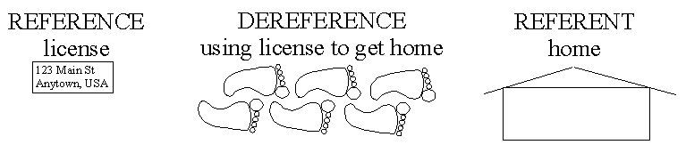
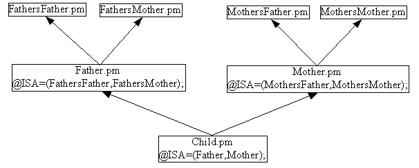

Impatient Perl
version: 24 July 2004
Copyright 2004 Greg London
Permission is granted to copy, distribute and/or modify this document under the terms of the GNU Free Documentation License, Version 1.2 or any later version published by the Free Software Foundation; with no Invariant Sections, no Front-Cover Texts, and no Back-Cover Texts. A copy of the license is included in the section entitled "GNU Free Documentation License".
Cover Art (Front and Back) on the book version of Impatient Perl is excluded from this license. Cover Art is Copyright Greg London 2004, All Rights Reserved.
For latest version of this work go to:
This document was created using OpenOffice version 1.1.0
(which exports directly to PDF)
running RedHat Linux
on a x86 machine from
http://www.penguincomputing.com
To buy a hardcopy of this document, go to:
http://www.lulu.com/GregLondon
It's only $8.50 plus shipping and handling.
And your purchase earns me 97 cents in royalties,
a large chunk of which will go to taxes.
The life you save may be my own.
Thank you.
Table of Contents
1 The Impatient Introduction to Perl 6
1.1 The history of perl in 100 words or less 6
1.2 Basic Formatting for this Document 6
1.3 Do You Have Perl Installed 7
1.4 Your First Perl Script, EVER 7
1.7 Cheap Reference Material 9
2 Storage 10
2.1 Scalars 10
2.1.1.2 Single quotes versus Double quotes 11
2.1.1.9 join 13
2.1.1.10 qw 13
2.1.1.11 Multi-Line Strings, HERE Documents 14
2.1.2.3 abs 15
2.1.2.4 int 15
2.1.2.5 trigonometry (sin,cos,tan) 16
2.1.2.7 sqrt 16
2.1.2.8 natural logarithms(exp,log) 16
2.1.2.9 random numbers (rand, srand) 17
2.1.3 Converting Between Strings and Numbers 17
2.1.3.2.3 Base Conversion Overview 19
2.1.4 Undefined and Uninitialized Scalars 20
2.1.5.2 TRUE 22
2.1.5.4.4 Assignment Precedence 25
2.1.5.4.5 Flow Control Precedence 25
2.1.5.4.6 Conditional Operator 26
2.2 Arrays 28
2.2.5 unshift( @array, LIST) 31
2.2.10 Undefined and Uninitialized Arrays 34
2.3 Hashes 34
2.3.1 exists ( $hash{$key} ) 35
2.3.2 delete ( $hash{key} ) 37
2.5.2 References to Named Referents 46
2.5.5 Complex Data Structures 49
2.5.5.2 Multidimensional Arrays 51
2.5.5.3 Deep Cloning, Deep Copy 52
2.5.6 Stringification of References 52
3.1 Labels 56
4 Packages and Namespaces and Lexical Scoping 56
4.2 Declaring Package Variables With our 57
4.3 Package Variables inside a Lexical Scope 58
4.6.1 Reference Count Garbage Collection 61
4.6.2 Garbage Collection and Subroutines 61
4.7 Package Variables Revisited 62
4.8 Calling local() on Package Variables 63
5.4 Data::Dumper and subroutines 66
5.5 Passing Arguments to/from a Subroutine 67
5.6 Accessing Arguments inside Subroutines via @_ 67
5.7 Dereferencing Code References 68
5.9 Subroutine Return Value 69
5.11 Using the caller() Function in Subroutines 70
5.12 The caller() function and $wantarray 71
5.13 Context Sensitive Subroutines with wantarray() 72
6 Compiling and Interpreting 72
9 The use Statement, Formally 74
9.3 The PERL5LIB and PERLLIB Environment Variables 76
9.5 MODULENAME -> import (LISTOFARGS) 76
9.6 The use Execution Timeline 77
10 bless() 78
11.3 INVOCANT->isa(BASEPACKAGE) 83
11.4 INVOCANT->can(METHODNAME) 83
13.1 Class 86
13.3 SUPER 87
14.1 Modules 89
14.4 Methods 90
14.6 Overriding Methods and SUPER 91
15 CPAN 91
15.3 Plain Old Documentation (POD) and perldoc 94
15.4 Creating Modules for CPAN with h2xs 94
17.1 @ARGV 96
17.2.1 Getopt::Declare Sophisticated Example 99
18.1 open 101
18.2 close 101
18.3 read 101
18.4 write 102
18.5 File Tests 103
19 Operating System Commands 104
19.1 The system() function 104
19.2 The Backtick Operator 105
19.3 Operating System Commands in a GUI 105
20.1 Variable Interpolation 107
20.5 Capturing and Clustering Parenthesis 111
20.5.1 $1, $2, $3, etc Capturing parentheses 111
20.5.2 Capturing parentheses not capturing 112
20.6.1 Metacharacters Within Character Classes 112
20.7 Shortcut Character Classes 113
20.8 Greedy (Maximal) Quantifiers 113
20.9 Thrifty (Minimal) Quantifiers 114
20.10 Position Assertions / Position Anchors 115
20.11 Modifiers 118
20.11.2 The m And s Modifiers 118
20.12 Modifiers For m{} Operator 121
20.13 Modifiers for s{}{} Operator 121
20.14 Modifiers for tr{}{} Operator 121
This document is for people who either want to learn perl or are already programming in perl and just do not have the patience to scrounge for information to learn and use perl. This document should also find use as a handy desk reference for some of the more common perl related questions.
In the mid 1980s, Larry Wall was working as a sys-admin and found that he needed to do a number of common, yet oddball functions over and over again. And he did not like any of the scripting languages that were around at the time, so he invented Perl. Version 1 was released circa 1987. A few changes have occurred between then and now. The current version of Perl has exceeded 5.8.0 and is a highly recommended upgrade.
Perl 6 is on the drawing board as a fundamental rewrite of the language. It is not available yet, and probably will not be available for some time.
This document is formatted into text sections, code sections, and shell sections. This sentence is part of a text section. Text sections will extend to the far left margin and will use a non-monospaced font. Text sections contain descriptive text.
Code sections are indented.
They also use a monospaced font.
This is a code section, which represents
code to type into a script.
You will need to use a TEXT EDITOR,
not a WORD PROCESSOR to create these files.
Generally, the code is contained in one file,
and is executed via a shell command.
If the code section covers multiple files,
each file will be labeled.
###filename:MyFile.pm
This code will be placed in a
file called MyFile.pm
#!/usr/local/env perl
###filename:myscript.pl
This code will be placed in a file
called myscript.pl
The first line of myscript.pl will be the
line with #!/usr/local/env perl
> shell sections are indented like code sections
> shell sections also use monospaced fonts.
> shell sections differ from code sections in
> that shell sections start with a '>' character
> which represents a shell prompt.
> shell sections show commands to type on
> the command line.
> shell sections also show the output of a script,
> if any exists.
> In simple examples, the code is shown in a
> code section, immediately followed by the output
> from running the script. The command to run
> the script is dropped to save space.
As an example, the code for a simple "Hello World" script is shown here. It can be typed into a file of any name. The name of the file is not important. The command to execute the script is not important either. In this example, the code is important, and the output is important, so they are they only things shown.
print "Hello World\n";
> Hello World
THIS DOCUMENT REFERS TO (LI/U)NIX PERL ONLY. Much of this will translate to Mac Perl and Windows Perl, but the exact translation will be left as an exercise to the reader.
To find out if you have perl installed and its version:
> perl -v
You should have at least version 5.004. If you have an older version or if you have no perl installed at all, you can download it for free from
CPAN is an acronym for Comprehensive Perl Archive Network. The CPAN site contains the latest perl for download and installation, as well as a TON of perl modules for your use.
If you are a beginner, get your sys-admin to install perl for you. Even if you are not a beginner, get your sys-admin to install perl for you.
Create a file called hello.pl using your favorite text editor. Type in the following:
#!/usr/bin/env perl
use warnings;
use strict; # comment
use Data::Dumper;
print "Hello World \n";
(The #! on the first line is sometimes pronounced "shebang")
(The .pl extension is simply a standard accepted extension for perl scripts.)
Run the script:
> perl hello.pl
Hello World
This calls perl and passes it the name of the script to execute. You can save yourself a little typing if you make the file executable:
> chmod +x hello.pl
And then run the script directly.
> hello.pl
Hello World
If "." is not in your PATH variable, you will have to run the script by typing:
> ./hello.pl
HOORAY! Now go update your resume.
Anything from a # character to the end of the line is a comment.
All the code examples are assumed to have the following script header, unless otherwise stated. It uses your PATH environment variable to determine which perl executable to run. If you need to have different versions of perl installed on your system, you can control which version of perl they will run by changing your PATH variable without having to change your script.
#!/usr/bin/env perl
use warnings;
use strict;
use Data::Dumper;
You can get quick help from the standard perl installation.
> perl -h
> perldoc
> perldoc -h
> perldoc perldoc
FAQs on CPAN: http://www.cpan.org/cpan-faq.html
Mailing Lists on CPAN: http://list.cpan.org
More free documentation on the web: http://www.perldoc.com
Still more free documentation on the web: http://learn.perl.org
"Programming Perl" by Larry Wall, Tom Christiansen, and Jon Orwant. Highly recommended book to have handy at all times. It is sometimes referred to as the "Camel Book" by way of the camel drawing on its cover. The publisher, O'Reilly, has printed enough computer books to choke a, well, camel, and each one has a different animal on its cover. Therefore if you hear reference to some animal book, it is probably an O'Reilly book. Well, unless its the "Dragon Book", because that refers to a book called "Compilers" by Aho, Sethi, and Ullman.
Perl: Originally, "Pearl" shortened to "Perl" to gain status as a 4-letter word. Now considered an acronym for Practical Extraction and Report Language, as well as Pathologically Eclectic Rubbish Lister. The name was invented first. The acronyms followed. Note that this is "Perl" with a capital "P". The "perl" with a lower case "p" refers to the exectuable found somewhere near /usr/local/bin/perl or via /bin/env perl.
CPAN: Comprehensive Perl Archive Network. See http://www.cpan.org for more.
DWIM: Do What I Mean. Once upon a time, the standard mantra for computer inflexibility was this: "I really hate this darn machine, I wish that they would sell it. It never does what I want, but only what I tell it." DWIM-iness is an attempt to embed perl with telepathic powers such that it can understand what you wanted to write in your code even though you forgot to actually type it. Well, alright, DWIM is just a way of saying the language was designed by some really lazy programmers so that you could be even lazier than they were. (They had to write perl in C, so they could not be TOO lazy.)
AUTOVIVIFY: "auto" meaning "self". "vivify" meaning "alive". To bring oneself to life. Generally applies to perl variables that can grant themselves into being without an explicit declaration from the programmer. Part of perl's DWIM-ness. "Autovivify" is a verb. The noun form is "autovivification". Sometimes, autovivification is not what you meant your code to do, and for some reason, when "do what I mean" meets autovivification in perl, autovivification wins. And now, a Haiku:
Do What I Mean and
Autovivification
sometimes unwanted
TMTOWTDI: There is More Than One Way To Do It. An acknowledgement that any programming problem has more than one solution. Rather than have perl decide which solution is best, it gives you all the tools and lets you choose. This allows a programmer to select the tool that will let him get his job done. Sometimes, it gives a perl newbie just enough rope to hang himself.
Foo Fighters: A phrase used around the time of WWII by radar operators to describe a signal that could not be explained. Later became known as a UFO. This has nothing to do with perl, except that "foo" is a common variable name used in perl.
Fubar: Another WWII phrase used to indicate that a mission had gone seriously awry or that a piece of equipment was inoperative. An acronym for Fouled Up Beyond All Recognition and similar interpretations. This has nothing to do with perl either, except that fubar somehow got mangled into foobar, and perl is often awash in variables named "foo" and "bar", especially if the programmer wishes to hide the fact that he did not understand his code well enough to come up with better names. If you use a $foo variable in your code, you deserve to maintain it.
Perl has three basic storage types: Scalars, Arrays, and Hashes.
The most basic storage type is a Scalar.
Arrays and Hashes use Scalars to build more complex data types.
Scalars are preceded with a dollar sign sigil. A "$" is a stylized "S".
sigil : A symbol. In Perl a sigil refers to the symbol in front of a variable.
Scalars can store Strings, Numbers (integers and floats), References, and Filehandles.
Perl is smart enough to know which type you are putting into a scalar and handle it.
my $diameter = 42;
my $pi = 3.1415;
my $initial = 'g';
my $name = 'John Doe';
my $ref_to_name = \$name
Without "use strict;" and without declaring a variable with a "my", using a variable causes perl to create one and initialize it to undef. This undef value will stringify to "" or numify to 0, depending how the undefined variable is used. This is called autovivication. (Stringification and Numification are covered later.)
Autovivify : to bring oneself to life.
In some situations, autovivication is handy. However, in certain situations, autovivification can be an unholy monster.
my $circumference = $pie * $diameter;
# oops, $pie doesn't exist. Autovivified to undef,
# numified to 0, therefore $circumference is zero.
Without use warnings; use strict; perl will autovivify a new variable called "pie", initialize it to zero, and assume that is what you meant to do. There is no reason that warnings and strictness should not be turned on in your scripts.
Scalars can store strings. You do not have to declare the length of the string, perl just handles it for you automatically.
String literals must be in single or double quotes or you will get an error.
print hello;
Error: Unquoted string "hello" may clash with reserved word
You can use single quotes or double quotes to set off a string literal:
my $name = 'mud';
my $greeting = "hello, $name\n";
print $greeting;
> hello, mud
You can also create a list of string literals using the qw() function.
my ($first,$last)=qw( John Doe );
print "first is '$first'\n";
print "last is '$last'\n";
> first is 'John'
> last is 'Doe'
Single quoted strings are a "what you see is what you get" kind of thing.
my $name = 'mud';
print 'hello $name';
> hello $name
Double quotes means that you get SOME variable interpolation during string evaluation. Complex variables, such as a hash lookup, will not be interpolated properly in double quotes.
my $name = 'mud';
print "hello $name \n";
> hello mud
Note: a double-quoted "\n" is a new-line character.
You may get rid of a newline character at the end of a string by chomp-ing the string. The chomp function removes one new line from the end of the string even if there are multiple newlines at the end. If there are no newlines, chomp leaves the string alone. The return value of chomp is what was chomped (seldom used).
My $string = "hello world\n";
chomp($string);
warn "string is '$string' \n"
> string is 'hello world' ...
String concatenation uses the period character "."
my $fullname = 'mud' . "bath";
Repeat a string with the "x" operator.
my $line = '-' x 80; # $line is eighty hypens
Find out how many characters are in a string with length().
my $len = length($line); # $len is 80
substr ( STRING_EXPRESSION, OFFSET, LENGTH);
Spin, fold, and mutilate strings using substr(). The substr function gives you fast access to get and modify chunks of a string. You can quickly get a chunk of LENGTH characters starting at OFFSET from the beginning or end of the string (negative offsets go from the end). The substr function then returns the chunk.
my $chunk = substr('the rain in spain', 9, 2);
warn "chunk is '$chunk'";
> chunk is 'in' ...
The substr function can also be assigned to, replacing the chunk as well. You need a string contained in a variable that can be modified, rather than using a constant literal in the example above.
my $string = 'the rain in spain';
substr($string, 9, 2) = 'beyond';
warn "string is '$string'";
> string is 'the rain beyond spain' ...
split(/PATTERN/, STRING_EXPRESSION,LIMIT);
Use the split function to break a string expression into components when the components are separated by a common substring pattern. For example, tab separated data in a single string can be split into separate strings.
my $tab_sep_data = "John\tDoe\tmale\t42";
my ($first,$last,$gender,$age)
= split(/\t/, $tab_sep_data);
You can break a string into individual characters by calling split with an empty string pattern "". The /PATTERN/ in split() is a Regular Expression, which is complicated enough to get its own chapter. However, some common regular expression PATTERNS for split are:
\t tab-separated data
\s+ whitespace-separated data
\s*,\s* comma-separated data
join('SEPARATOR STRING', STRING1, STRING2, ...);
Use join to stitch a list of strings into a single string.
my $string = join(" and ",
'apples', 'bananas', 'peaches');
warn "string is '$string'";
> string is 'apples and bananas and peaches'...
The qw() function takes a list of barewords and quotes them for you.
my $string =
join(" and ", qw(apples bananas peaches));
warn "string is '$string'";
> string is 'apples and bananas and peaches'...
Perl allows you to place a multi-line string in your code by using what it calls a "here document”.
My $string = <<”ENDOFDOCUMENT”;
Do What I Mean and
Autovivification
sometimes unwanted
ENDOFDOCUMENT
warn "string is '$string'”;
> string is 'Do What I Mean and
> Autovivification
> sometimes unwanted' at ...
The '<<' indicates a HERE document, followed by the name of the label indicating the end of the here document. Enclosing the label in double quotes means that perl variables in the document will get interpolated as strings. Enclosing the label in single quotes means that no string interpolation occurs.
Perl then reads the lines after the '<<' as string literal content until it sees the end of string label positioned at the beginning of a line.
Perl generally uses floats internally to store numbers. If you specify something that is obviously an integer, it will use an integer. Either way, you simply use it as a scalar.
my $days_in_week = 7; # scalar => integer
my $temperature = 98.6; # scalar => float
Perl allows several different formats for numeric literals, including integer, floating point, and scientific notation, as well as decimal, octal, and hexadecimal.
Binary numbers begin with "0b"
hexadecimal numbers begin with "0x"
Octal number begin with a "0"
All other numeric literals are assumbed to be decimal.
my $solar_temp_c = 1.5e7; # centigrade
my $solar_temp_f = 27_000_000.0; # fahrenheit
my $base_address = 01234567; # octal
my $high_address = 0xfa94; # hexadecimal
my $low_address = 0b100101; # binary
Use abs to get the absolute value of a number.
my $var1 = abs(-3.4); # var1 is 3.4
my $var2 = abs(5.9); # var2 is 5.9
Use "int" to convert a floating point number to an integer. Note that this truncates everything after the decimal point, which means you do NOT get rounding. Truncating means that positive numbers always get smaller and negative numbers always get bigger.
my $price = 9.95;
my $dollars = int ($price);
# dollars is 9, not 10! false advertising!
my $y_pos = -5.9;
my $y_int = int($y_pos);
# y_int is -5 (-5 is "bigger" than -5.9)
If you want to round a float to the nearest integer, you will need to write a bit of code. One way to accomplish it is to use sprintf:
my $price = 9.95;
my $dollars = sprintf("%.0f", $price);
# dollars is 10
The sin, cos, and tan functions return the sine, cosine, and tangent of a value given in RADIANS. If you have a value in DEGREES, multiply it by (pi/180) first.
my $angle = 45; # 45 deg
my $radians = $angle * ( 3.14 / 180 ); # .785 rad
my $sine_deg = sin($angle); # 0.707
my $sine_rad = sin($radians); # 0.707
If you need inverse sine, cosine, or tangent, then use the Math::Trig module on CPAN.
Use the "**" operator to raise a number to some power.
my $seven_squared = 7 ** 2; # 49
my $five_cubed = 5 ** 3; #125
my $three_to_the_fourth = 3 ** 4; # 81
Use fractional powers to take a root of a number:
my $square_root_of_49 = 49 ** (1/2); # 7
my $cube_root_of_125 = 125 ** (1/3); # 5
my $fourth_root_of_81 = 81 ** (1/4); # 3
Standard perl cannot handle imaginary numbers. Use the Math::Complex module on CPAN.
Use sqrt to take the square root of a positive number.
my $square_root_of_123 = sqrt(123); # 11.0905
The exp function returns e to the power of the value given. To get e, call exp(1);
my $value_of_e = exp(1); # 2.7183
my $big_num= exp(42); # 2.7183 ** 42 = 1.7e18
The log function returns the inverse exp() function, which is to say, log returns the number to which you would have to raise e to get the value passed in.
my $inv_exp = log($big_num); # inv_exp = 42
If you want another base, then use this subroutine:
sub log_x_base_b {return log($_[0])/log($_[1]);}
# want the log base 10 of 12345
# i.e. to what power do we need to raise the
# number 10 to get the value of 12345?
my $answer = log_x_base_b(12345,10); # answer = 4.1
Note that inverse natural logs can be done with exponentiation, you just need to know the value of the magic number e (~ 2.718281828). The exp function is straightforward exponentiation:
# big_num = 2.7183 ** 42 = 1.7e18
my $big_num = $value_of_e ** 42;
Natural logarithms simply use the inverse of the value (i.e. 1/value) with exponentiation.
# inv_exp = 2.7183 ** (1/1.7e18) = 42
my $inv_exp = $value_of_e ** (1/$big_num);
The rand function is a pseudorandom number generator (PRNG).
If a value is passed in, rand returns a number that satisfies ( 0 <= return <=input )
If no value is passed in, rand returns a number in the range ( 0 <= return < 1 )
The srand function will seed the PRNG with the value passed in. If no value is passed in, srand will seed the PRNG with something from the system that will give it decent randomness. You can pass in a fixed value to guarantee the values returned by rand will always follow the same sequence (and therefore are predictable). You should only need to seed the PRNG once. If you have a version of perl greater than or equal to 5.004, you should not need to call it at all, because perl will call srand at startup.
Many languages require the programmer to explicitely convert numbers to strings before printing them out and to convert strings to numbers before performing arithemetic on them. Perl is not one of these languages.
Perl will attempt to apply Do What I Mean to your code and just Do The Right Thing. There are two basic conversions that can occur: stringification and numification.
Stringify: Converting something other than a string to a string form.
Perl will automatically convert a number (integer or floating point) to a string format before printing it out.
my $mass = 7.3;
my $volume = 4;
warn "mass is '$mass'\n";
warn "volume is '$volume'\n";
> mass is '7.3' ...
> volumn is '4' ...
Even though $mass is stored internally as a floating point number and $volume is stored internally as an integer, the code did not have to explicitely convert these numbers to string format before printing them out. Perl will attempt to convert the numbers into the appropriate string representation. If you do not want the default format, use sprintf.
If you want to force stringification, simply concatenate a null string onto the end of the value.
my $mass = 7.3; # 7.3
my $string_mass = $mass .= ''; # '7.3'
Use sprintf to control exactly how perl will convert a number into string format.
sprintf ( FORMAT_STRING, LIST_OF_VALUES );
For example:
my $pi = 3.1415;
my $str = sprintf("%06.2f",$pi);
warn "str is '$str'";
> str is '003.14' ...
Decoding the above format string:
% => format
0 => fill leading spaces with zero
6 => total length, including decimal point
.2 => put two places after the decimal point
f => floating point notation
To convert a number to a hexadecimal, octal, binary, or decimal formated string, use the following FORMAT_STRINGS:
hexadecimal "%lx" The letter 'l' (L)
octal "%lo" indicates the input is
binary "%lb" an integer, possibly
decimal integer "%ld" a Long integer.
decimal float "%f"
scientific "%e"
Numify: Converting something other than a number to a numeric form.
Sometimes you have string information that actually represents a number. For example, a user might enter the string "19.95" which must be converted to a float before perl can perform any arithemetic on it.
You can force numification of a value by adding integer zero to it.
my $user_input = '19.95'; # '19.95'
my $price = $user_input+0; # 19.95
If the string is NOT in base ten format, then use oct() or hex()
The oct function can take a string that fits the octal, hexadecimal, or binary format and convert it to an integer.
binary formatted strings must start with "0b"
hexadecimal formatted strings must start with "0x"
All other numbers are assumed to be octal strings.
Note: even though the string might not start with a zero (as required by octal literals), oct will assume the string is octal. This means calling oct() on a decimal number could be a bad thing.
To handle a string that could contain octal, hexadecimal, binary, OR decimal strings, you could assume that octal strings must start with "0". Then, if the string starts with zero, call oct on it, else assume it's decimal. This example uses regular expressions and the conditional operator.
my $num = ($str=~m{^0}) ? oct($str) : $str + 0;
The hex() function takes a string in hex format and converts it to integer. The hex() function is like oct() except that hex() only handles hex base strings, and it does not require a "0x" prefix.
Given a decimal number:
my $decimal=12;
Convert from decimal to another base using sprintf:
my $hex = sprintf("%lx", $decimal);
my $oct = sprintf("%lo", $decimal);
my $bin = sprintf("%lb", $decimal);
If you want to pad the most significant bits with zeroes and you know the width, use this:
# 08 assumes width is 8 characters
my $p_hex = sprintf("%08lx", $decimal);
my $p_oct = sprintf("%08lo", $decimal);
my $p_bin = sprintf("%08lb", $decimal);
If you have a string and you want to convert it to decimal, use the conditional operator and oct().
sub convert_to_decimal
{ ($_[0]=~m{^0}) ? Oct($_[0]) : $_[0] + 0; }
warn convert_to_decimal('42'); # dec
warn convert_to_decimal('032'); # oct
warn convert_to_decimal('0xff'); # hex
warn convert_to_decimal('0b1001011'); # bin
If you want to know how many bits it would take to store a number, convert it to binary using sprintf (don't pad with zeroes) and then call length() on it.
warn length(sprintf("%lb", 255)); # 8
All the examples above initialized the scalars to some known value before using them. You can declare a variable but not initialize it, in which case, the variable is undefined.
If you use a scalar that is undefined, perl will stringify or numify it based on how you are using the variable.
An undefined scalar stringifies to an empty string: ""
An undefined scalar numifies to zero: 0
Without warnings or strict turned on, this conversion is silent. With warnings/strict on, the conversion still takes place, but a warning is emitted.
Since perl automatically performs this conversion no matter what, there is no string or arithematic operation that will tell you if the scalar is undefined or not.
Use the defined() function to test whether a scalar is defined or not.
If the scalar is defined, the function returns a boolean "true" (1)
If the scalar is NOT defined, the function returns a boolean "false" ("").
If you have a scalar with a defined value in it, and you want to return it to its uninitialized state, assign undef to it. This will be exactly as if you declared the variable with no initial value.
my $var; # undef
print "test 1 :";
if(defined($var)) {print "defined\n";}
else {print "undefined\n";}
$var = 42; # defined
print "test 2 :";
if(defined($var)) {print "defined\n";}
else {print "undefined\n";}
$var = undef; # undef as if never initialized
print "test 3 :";
if(defined($var)) {print "defined\n";}
else {print "undefined\n";}
> test 1 :undefined
> test 2 :defined
> test 3 :undefined
Perl does not have a boolean "type" per se. Instead, perl interprets scalar strings and numbers as "true" or "false" based on some rules:
Strings "" and "0" are FALSE,
any other string or stringification is TRUE
2) Number 0 is FALSE, any other number is TRUE
3) all references are TRUE
4) undef is FALSE
Note that these are SCALARS. Any variable that is not a SCALAR is first evaluated in scalar context, and then treated as a string or number by the above rules. The scalar context of an ARRAY is its size. An array with one undef value has a scalar() value of 1 and is therefore evaluated as TRUE.
A subroutine returns a scalar or a list depending on the context in which it is called. To explicitely return FALSE in a subroutine, use this:
return wantarray() ? () : 0; # FALSE
This is sufficiently troublesome to type for such a common thing that an empty return statement within a subroutine will do the same thing:
return; #FALSE
The following scalars are interpreted as FALSE:
integer 0 # false
float 0.0 # false
string '0' # false
string '' # false
undef # false
ALL other values are interpreted as TRUE, which means the following scalars are considered TRUE, even though you may have expected some of them to be false.
string '0.0' # true
string '00' # true
string 'false' # true
float 3.1415 # true
integer 11 # true
string 'yowser' # true
If you are doing a lot of work with numbers on a variable, you may wish to force numification on that variable ($var+0) before it gets boolean tested, just in case you end up with a string "0.0" instead of a float 0.0 and get some seriously hard to find bugs.
Note that the string '0.0' is TRUE, but ('0.0'+0) will get numified to 0, which is FALSE. If you are processing a number as a string and want to evaluate it as a BOOLEAN, make sure you explicitely NUMIFY it before testing its BOOLEANNESS.
Built in Perl functions that return a boolean will return an integer one (1) for TRUE and an empty string ("") for FALSE.
Comparison operators return booleans, specifically an integer 1 for true and a null string "" for false. The "Comparison" operator ("<=>" and "cmp") return a -1, 0, or +1, indicating the compared values are less than, equal to, or greater than. Distinct comparison operators exist for comparing strings and for comparing numbers.
|
Function |
String |
Numeric |
|---|---|---|
|
equal to |
eq |
== |
|
not equal to |
ne |
!= |
|
less than |
lt |
< |
|
greater than |
gt |
> |
|
less than or equal to |
le |
<= |
|
greater than or equal to |
ge |
>= |
|
Comparison (<-1, ==0,>1) |
cmp |
<=> |
Note that if you use a string operator to compare two numbers, you will get their alphabetical string comparison. Perl will stringify the numbers and then perform the compare. This will occur silently; perl will emit no warning. And if you wanted the numbers compared numerically but used string comparison, then you will get the wrong result when you compare the strings ("9" lt "100").
String "9" is greater than (gt) string "100".
Number 9 is less than (<=) number 100.
If you use a numeric operator to compare two strings, perl will attempt to numify the strings and then compare them numerically. Comparing "John" <= "Jacob" will cause perl to convert "John" into a number and fail miserably. However, if warnings/strict is not on, it will fail miserably and SILENTLY, assigning the numification of "John" to integer zero.
The numeric comparison operator '<=>' is sometimes called the "spaceship operator".
Perl has two sets of operators to perform logical AND, OR, NOT functions. The difference between the two is that one set has a higher precedence than the other set.
The higher precedence logical operators are the '&&', '||', and '!' operators.
|
function |
operator |
usage |
return value |
|---|---|---|---|
|
AND |
&& |
$one && $two |
if ($one is false) $one else $two |
|
OR |
|| |
$one || $two |
if ($one is true) $one else $two |
|
NOT |
! |
! $one |
if ($one is false) true else false |
The lower precedence logical operators are the 'and', 'or', 'not', and 'xor' operators.
|
function |
operator |
usage |
return value |
|---|---|---|---|
|
AND |
and |
$one and $two |
if ($one is false) $one else $two |
|
OR |
or |
$one or $two |
if ($one is true) $one else $two |
|
NOT |
not |
not $one |
if ($one is false) true else false |
|
XOR |
xor |
$one xor $two |
if ( ($one true and $two false) or ($one false and $two true) ) then return true else false |
Both sets of operators are very common in perl code, so it is useful to learn how precedence affects their behavior. But first, some examples of how to use them.
This subroutine has two input parameters ($left and $right) with default values (1.0 and 2.0). If the user calls the subroutine with missing arguments, the undefined parameters will instead receive their default values.
sub mysub
{
my( $left, $right )=@_;
$left ||= 1.0;
$right ||= 2.0;
# deal with $left and $right here.
}
The '||=' operator is a fancy shorthand. This:
$left ||= 1.0;
is exactly the same as this:
$left = $left || 1.0;
The open() function here will attempt to open $filename for reading and attach $filehandle to it. If open() fails in any way, it returns FALSE, and FALSE OR'ed with die() means that perl will evaluate the die() function to finish the logical evalutation. It won't complete because execution will die, but the end result is code that is actually quite readable.
open (my $filehandle, $filename)
or die "cant open";
The reason we used '||' in the first example and 'or' in the second example is because the operators have different precedence, and we used the one with the precedence we needed.
When working with an assignment, use '||' and '&&', because they have a higher precedence than (and are evaluated before) the assignement '='. The 'or' and 'and' operators have a precedence that is LOWER than an assignment, meaning the assignment would occur first, followed by any remaining 'and' and 'or' operators.
Right:
my $default = 0 || 1;
# default is 1
Wrong:
my $default = 0 or 1;
# default is 0
The second (wrong) example is equivalent to this:
(my $default = 0) or 1;
which will ALWAYS assign $default to the first value and discard the second value.
When using logical operators to perform flow control, use 'or' and 'and' operators, because they have lower precedence than functions and other statements that form the boolean inputs to the 'or' or 'and' operator. The '||' and '&&' have higher precedence than functions and may execute before the first function call.
Right:
close $fh or die "Error:could not close";
Wrong:
close $fh || die "Error: could not close";
The second (wrong) example is equivalent to this:
close ($fh || die "Error");
which will ALWAYS evaluate $fh as true, NEVER die, and close $fh. If close() fails, the return value is discarded, and the program continues on its merry way.
It is always possible to override precedence with parentheses, but it is probably better to get in the habit of using the right operator for the right job.
The conditional operator mimics the conditional testing of an if-else block. The conditional operator uses three operands, and is also called a trinary operator.
As it happens, the conditional operator is perl's ONLY trinary operator, so people sometimes call it the trinary or ternary operator when they mean conditional operator. As long as perl doesn't add another trinary operator, its not a problem. It is even more rarely called the ?: operator.
The conditional operator has this form:
my $RESULT = $BOOLEAN1 ? $VALUE1 : $VALUE2;
This can be rewritten as an if-else block like this:
my $RESULT;
if($BOOLEAN1) { $RESULT = $VALUE1 }
eles { $RESULT = $VALUE2 }
The conditional operator allows you to declare the variable and perform the assignment all in one short line of code.
Note that $BOOLEAN1, $VALUE1 and $VALUE2 can be replaced by any normal perl expression, rather than being limited to a simple scalar value. One interesting expression that you could replace $VALUE2 with is another conditional operator, effectively allowing you to create a chain of if-elsif-elsif-else statements. For example:
my $RESULT =
$BOOLEAN1 ? $VALUE1
: $BOOLEAN2 ? $VALUE2
: $BOOLEAN3 ? $VALUE3
: $BOOLEAN4 ? $VALUE4
: $VALUE5;
The above example is equivalent to this mouthful:
my $RESULT;
if($BOOLEAN1) { $RESULT = $VALUE1 }
elsif($BOOLEAN2) { $RESULT = $VALUE2 }
elsif($BOOLEAN3) { $RESULT = $VALUE3 }
elsif($BOOLEAN4) { $RESULT = $VALUE4 }
eles { $RESULT = $VALUE5 }
A reference points to the variable to which it refers. It is kind of like a pointer in C, which says "the data I want is at this address". Unlike C, you cannot manually alter the address of a perl reference. You can only create a reference to a variable that is visible from your current scope.
Create a reference by placing a "\" in front of the variable:
my $name = 'John';
my $age = 42;
my $name_ref = \$name;
my $age_ref = \$age;
Perl will stringify a reference so that you can print it and see what it is.
warn "age_ref is '$age_ref'";
> age_ref is 'SCALAR(0x812e6ec)' ...
This tells you that $age_ref is a reference to a SCALAR (which we know is called $age). It also tells you the address of the variable to which we are referring is 0x812e6ec.
You cannot referencify a string. I.E. you cannot give perl a string, such as "SCALAR(0x83938949)" and have perl give you a reference to whatever is at that address. Perl is pretty loosy goosey about what it will let you do, but not even perl is so crazy as to give people complete access to the system memory.
You can dereference a reference by putting an extra sigil (of the appropriate type) in front of the reference variable.
my $name = 'John';
my $ref_to_name = \$name;
my $deref_name = $$ref_to_name;
warn $deref_name;
> John ...
References are interesting enough that they get their own section. But I introduce them here so that I can introduce a really cool module that uses references: Data::Dumper. Data::Dumper will take a reference to ANYTHING and print out the thing to which it refers in a human readable form.
This does not seem very impressive with a reference to a scalar:
my $name = 'John';
my $ref_to_name = \$name;
warn Dumper \$ref_to_name;
> $VAR1 = \'John';
But this will be absolutely essential when working with Arrays and Hashes.
Scalars can store a filehandle. File IO gets its own section, but I introduce it here to give a complete picture of what scalars can hold.
Given a scalar that is undefined (uninitialized), calling open() on that scalar and a string filename will tell perl to open the file specified by the string, and store the handle to that file in the scalar.
open(my $fh, '>out.txt');
print $fh "hello world\n";
print $fh "this is simple file writing\n";
close($fh);
The scalar $fh in the example above holds the filehandle to "out.txt". Printing to the filehandle actually outputs the string to the file.
There is some magic going on there that I have not explained, but that is a quick intro to scalar filehandles.
Scalars can store STRINGS, NUMBERS (floats and ints), REFERENCES, and FILEHANDLES.
Stringify: to convert something to a string format
Numify: to convert something to a numeric format
The following scalars are interpreted as boolean FALSE:
integer 0, float 0.0, string "0", string "", undef
All other scalar values are interpreted as boolean TRUE.
Arrays are preceded with an "at" sigil. The "@" is a stylized "a".
An array stores a bunch of scalars that are accessed via an integer index.
Perl arrays are ONE-DIMENSIONAL ONLY. (Do Not Panic.)
The first element of an array always starts at ZERO (0).
When you refer to an entire array, use the "@" sigil.
my @numbers = qw ( zero one two three );
When you index into the array, the "@" character changes to a "$" and the numeric index is placed in square brackets.
my @numbers = qw ( zero one two three );
my $string = $number[2];
warn $string;
> two ...
The length of an array is not pre-declared. Perl autovivifies whatever space it needs.
my @months;
$months[1]='January';
$months[5]='May';
# $months[0] and $months[2..4] are autovivified
# and initialized to undef
print Dumper \@months;
> $VAR1 = [
> undef, # index 0 is undefined
> 'January', # $months[1]
> ${\$VAR1->[0]}, # this is same as undef
> ${\$VAR1->[0]}, # undef
> ${\$VAR1->[0]}, # undef
> 'May' # $months[5]
> ];
If you want to see if you can blow your memory, try running this piece of code:
my @mem_hog;
$mem_hog[10000000000000000000000]=1;
# the array is filled with undefs
# except the last entry, which is initialized to 1
Arrays can store ANYTHING that can be stored in a scalar
my @junk_drawer = ( 'pliers', 1,1,1, '*', '//',
3.14, 9*11, 'yaba', 'daba' );
Negative indexes start from the end of the array and work backwards.
my @colors = qw ( red green blue );
my $last=$colors[-1];
warn "last is '$last'";
> last is 'blue' ...
To get how many elements are in the array, use "scalar"
my @phonetic = qw ( alpha bravo charlie delta );
my $quantity = scalar(@phonetic);
warn $quantity;
> 4 ...
When you assign an entire array into a scalar variable, you will get the same thing, but calling scalar() is much more clear.
my @phonetic = qw ( alpha bravo charlie );
my $quant = @phonetic;
warn $quant;
> 3 ...
This is explained later in the "list context" section.
Use push() to add elements onto the end of the array (the highest index). This will increase the length of the array by the number of items added.
my @groceries = qw ( milk bread );
push(@groceries, qw ( eggs bacon cheese ));
print Dumper \@groceries;
> $VAR1 = [
> 'milk',
> 'bread',
> 'eggs',
> 'bacon',
> 'cheese'
> ];
Use pop() to get the last element off of the end of the array (the highest index). This will shorten the array by one. The return value of pop() is the value popped off of the array.
my @names = qw ( alice bob charlie );
my $last_name = pop(@names);
warn "popped = $last_name";
print Dumper \@names;
> popped = charlie ...
> $VAR1 = [
> 'alice',
> 'bob'
> ];
Use shift() to remove one element from the beginning/bottom of an array (i.e. at index zero). All elements will be shifted DOWN one index. The array will be shorted by one. The return value is the value removed from the array.
my @curses = qw ( fee fie foe fum );
my $start = shift(@curses);
warn $start;
warn Dumper \@curses;
> fee
> $VAR1 = [
> 'fie',
> 'foe',
> 'fum'
> ];
use unshift() to add elements to the BEGINNING/BOTTOM of an array (i.e. at index ZERO). All the other elements in the array will be shifted up to make room. This will length the array by the number of elements in LIST.
my @trees = qw ( pine maple oak );
unshift(@trees, 'birch');
warn Dumper \@trees;
> $VAR1 = [
> 'birch', # index 0
> 'pine', # old index 0, now 1
> 'maple', # 2
> 'oak' # 3
> ];
Use foreach to iterate through all the elements of a list. Its formal definition is:
LABEL foreach VAR (LIST) BLOCK
This is a control flow structure that is covered in more detail in the "control flow" section. The foreach structure supports last, next, and redo statements.
Use a simple foreach loop to do something to each element in an array:
my @fruits = qw ( apples oranges lemons pears );
foreach my $fruit (@fruits)
{ print "fruit is '$fruit'\n"; }
> fruit is 'apples'
> fruit is 'oranges'
> fruit is 'lemons'
> fruit is 'pears'
DO NOT ADD OR DELETE ELEMENTS TO AN ARRAY BEING PROCESSED IN A FOREACH LOOP.
my @numbers = qw (zero one two three);
foreach my $num (@numbers)
{
shift(@numbers) if($num eq 'one');
print "num is '$num'\n";
}
> num is 'zero'
> num is 'one'
> num is 'three'
# note: I deleted 'zero', but I failed to
# print out 'two', which is still part of array.
# BAD!!
VAR acts as an alias to the element of the array itself. Changes to VAR propagate to changing the array.
my @integers = ( 23, 142, 9384, 83948 );
foreach my $num (@integers)
{ $num+=100; }
print Dumper \@integers;
> $VAR1 = [
> 123,
> 242,
> 9484,
> 84048
> ];
Use sort() to sort an array alphabetically. The return value is the sorted version of the array. The array passed in is left untouched.
my @fruit = qw ( pears apples bananas oranges );
my @sorted_array = sort(@fruit);
print Dumper \@sorted_array ;
>$VAR1 = [
> 'apples',
> 'bananas',
> 'oranges',
> 'pears'
> ];
Sorting a list of numbers will sort them alphabetically as well, which probably is not what you want.
my @scores = ( 1000, 13, 27, 200, 76, 150 );
my @sorted_array = sort(@scores);
print Dumper \@sorted_array ;
> $VAR1 = [
> 1000, # 1's
> 13, # 1's
> 150, # 1's
> 200,
> 27,
> 76
> ];
The sort() function can also take a code block ( any piece of code between curly braces ) which defines how to perform the sort if given any two elements from the array. The code block uses two global variables, $a and $b, and defines how to compare the two entries.
This is how you would sort an array numerically.
my @scores = ( 1000, 13, 27, 200, 76, 150 );
my @sorted_array = sort {$a<=>$b} (@scores);
print Dumper \@sorted_array ;
> $VAR1 = [
> 13,
> 27,
> 76,
> 150,
> 200,
> 1000
> ];
The reverse() function takes a list and returns an array in reverse order. The last element becomes the first element. The first element becomes the last element.
my @numbers = reverse (1000,13,27,200,76,150);
print Dumper \@numbers ;
> $VAR1 = [
> 150,
> 76,
> 200,
> 27,
> 13,
> 1000
> ];
Use splice() to add or remove elements into or out of any index range of an array.
splice ( ARRAY , OFFSET , LENGTH , LIST );
The elements in ARRAY starting at OFFSET and going for LENGTH indexes will be removed from ARRAY. Any elements from LIST will be inserted at OFFSET into ARRAY.
my @words = qw ( hello there );
splice(@words, 1, 0, 'out');
warn join(" ", @words);
> hello out there ...
An array is initialized as having no entries. Therefore you can test to see if an array is initialized by calling scalar() on it. This is equivalent to calling defined() on a scalar variable. If scalar() returns false (i.e. integer 0), then the array is uninitialized.
If you want to uninitialize an array that contains data, then you do NOT want to assign it undef like you would a scalar. This would fill the array with one element at index zero with a value of undefined.
my @array = undef; # WRONG
To clear an array to its original uninitialized state, assign an empty list to it. This will clear out any entries, and leave you with a completely empty array.
my @array = (); # RIGHT
Hashes are preceded with a percent sign sigil.
The "%" is a stylized "key/value" pair.
A hash stores a bunch of scalars that are accessed via a string index called a "key"
Perl hashes are ONE-DIMENSIONAL ONLY. (Do Not Panic.)
There is no order to the elements in a hash. (Well, there is, but you should not use a hash with an assumption about what order the data will come out.)
You can assign any even number of scalars to a hash. Perl will extract them in pairs. The first item will be treated as the key, and the second item will be treated as the value.
When you refer to an entire hash, use the "%" sigil.
my %info = qw ( name John age 42 );
When you look up a key in the hash, the "%" character changes to a "$" and the key is placed in curly braces.
my %info = qw ( name John age 42 );
my $data = $info{name};
warn $data;
> John ...
The keys of a hash are not pre-declared. If the key does not exist during an ASSIGNMENT, the key is created and given the assigned value.
my %inventory;
$inventory{apples}=42;
$inventory{pears}=17;
$inventory{bananas}=5;
print Dumper \%inventory;
>$VAR1 = {
> 'bananas' => 5,
> 'apples' => 42,
> 'pears' => 17
> };
If the key does not exist during a FETCH, the key is NOT created, and undef is returned.
my %inventory;
$inventory{apples}=42;
my $peaches = $inventory{peaches};
warn "peaches is '$peaches'";
print Dumper \%inventory;
> Use of uninitialized value in concatenation
> peaches is '' at ./test.pl line 13.
> $VAR1 = {
> 'apples' => 42
> };
Use exists() to see if a key exists in a hash. You cannot simply test the value of a key, since a key might exist but store a value of FALSE
my %pets = ( cats=>2, dogs=>1 );
unless(exists($pets{fish}))
{ print "No fish here\n"; }
Warning: during multi-key lookup, all the lower level keys are autovivified, and only the last key has exists() tested on it. This only happens if you have a hash of hash references. References are covered later, but this is a "feature" specific to exists() that can lead to very subtle bugs. Note in the following example, we explicitely create the key "Florida", but we only test for the existence of {Maine}->{StateBird}, which has the side effect of creating the key {Maine} in the hash.
my %stateinfo;
$stateinfo{Florida}->{Abbreviation}='FL';
if (exists($stateinfo{Maine}->{StateBird}))
{ warn "it exists"; }
print Dumper \%stateinfo;
> $VAR1 = {
> 'Florida' => {
> 'Abbreviation' => 'FL'
> },
> 'Maine' => {}
> };
You must test each level of key individually, and build your way up to the final key lookup if you do not want to autovivify the lower level keys.
my %stateinfo;
$stateinfo{Florida}->{Abbreviation}='FL';
if (exists($stateinfo{Maine}))
{
if (exists($stateinfo{Maine}->{StateBird}))
{ warn "it exists"; }
}
print Dumper \%stateinfo;
> $VAR1 = {
> 'Florida' => {
> 'Abbreviation' => 'FL'
> }
> };
Use delete to delete a key/value pair from a hash. Once a key is created in a hash, assigning undef to it will keep the key in the hash and will only assign the value to undef. The only way to remove a key/value pair from a hash is with delete().
my %pets =
(
fish=>3,
cats=>2,
dogs=>1,
);
$pets{cats}=undef;
delete($pets{fish});
print Dumper \%pets;
> $VAR1 = {
> 'cats' => undef,
> 'dogs' => 1
> };
Use keys() to return a list of all the keys in a hash. The order of the keys will be based on the internal hashing algorithm used, and should not be something your program depends upon. Note in the example below that the order of assignment is different from the order printed out.
my %pets =
(
fish=>3,
cats=>2,
dogs=>1,
);
foreach my $pet (keys(%pets))
{
print "pet is '$pet'\n";
}
> pet is 'cats'
> pet is 'dogs'
> pet is 'fish'
If the hash is very large, then you may wish to use the each() function described below.
Use values() to return a list of all the values in a hash. The order of the values will match the order of the keys return in keys().
my %pets =
(
fish=>3,
cats=>2,
dogs=>1,
);
my @pet_keys = keys(%pets);
my @pet_vals = values(%pets);
print Dumper \@pet_keys;
print Dumper \@pet_vals;
> $VAR1 = [
> 'cats',
> 'dogs',
> 'fish'
> ];
> $VAR1 = [
> 2,
> 1,
> 3
> ];
If the hash is very large, then you may wish to use the each() function described below.
Use each() to iterate through each key/value pair in a hash, one at a time.
my %pets =
(
fish=>3,
cats=>2,
dogs=>1,
);
while(my($pet,$qty)=each(%pets))
{
print "pet='$pet', qty='$qty'\n";
}
> pet='cats', qty='2'
> pet='dogs', qty='1'
> pet='fish', qty='3'
Every call to each() returns the next key/value pair in the hash. After the last key/value pair is returned, the next call to each() will return an empty list, which is boolean false. This is how the while loop is able to loop through each key/value and then exit when done.
Every hash has one "each iterator" attached to it. This iterator is used by perl to remember where it is in the hash for the next call to each().
Calling keys() on the hash will reset the iterator. The list returned by keys() can be discared.
keys(%hash);
Do not add keys while iterating a hash with each().
You can delete keys while iterating a hash with each().
The each() function does not have to be used inside a while loop. This example uses a subroutine to call each() once and print out the result. The subroutine is called multiple times without using a while() loop.
my %pets =
(
fish=>3,
cats=>2,
dogs=>1,
);
sub one_time
{
my($pet,$qty)=each(%pets);
# if key is not defined,
# then each() must have hit end of hash
if(defined($pet))
{ print "pet='$pet', qty='$qty'\n"; }
else
{ print "end of hash\n"; }
}
one_time; # cats
one_time; # dogs
keys(%pets); # reset the hash iterator
one_time; # cats
one_time; # dogs
one_time; # fish
one_time; # end of hash
one_time; # cats
one_time; # dogs
> pet='cats', qty='2'
> pet='dogs', qty='1'
> pet='cats', qty='2'
> pet='dogs', qty='1'
> pet='fish', qty='3'
> end of hash
> pet='cats', qty='2'
> pet='dogs', qty='1'
There is only one iterator variable connected with each hash, which means calling each() on a hash in a loop that then calls each() on the same hash another loop will cause problems. The example below goes through the %pets hash and attempts to compare the quantity of different pets and print out their comparison.
my %pets =
(
fish=>3,
cats=>2,
dogs=>1,
);
while(my($orig_pet,$orig_qty)=each(%pets))
{
while(my($cmp_pet,$cmp_qty)=each(%pets))
{
if($orig_qty>$cmp_qty)
{
print "there are more $orig_pet "
."than $cmp_pet\n";
}
else
{
print "there are less $orig_pet "
."than $cmp_pet\n";
}
}
}
> there are more cats than dogs
> there are less cats than fish
> there are more cats than dogs
> there are less cats than fish
> there are more cats than dogs
> there are less cats than fish
> there are more cats than dogs
> there are less cats than fish
> ...
The outside loop calls each() and gets "cats". The inside loop calls each() and gets "dogs". The inside loop continues, calls each() again, and gets "fish". The inside loop calls each() one more time and gets an empty list. The inside loop exits.
The outside loop calls each() which continues where the inside loop left off, namely at the end of the list, and returns "cats". The code then enters the inside loop, and the process repeats itself indefinitely.
One solution for this each() limitation is shown below. The inner loop continues to call each() until it gets the key that matches the outer loop key. The inner loop must skip the end of the hash (an undefined key) and continue the inner loop. This also fixes a problem in the above example in that we probably do not want to compare a key to itself.
my %pets =
(
fish=>3,
cats=>2,
dogs=>1,
);
while(my($orig_pet,$orig_qty)=each(%pets))
{
while(1)
{
my($cmp_pet,$cmp_qty)=each(%pets);
next unless(defined($cmp_pet));
last if($cmp_pet eq $orig_pet);
if($orig_qty>$cmp_qty)
{
print "there are more $orig_pet "
."than $cmp_pet\n";
}
else
{
print "there are less $orig_pet "
."than $cmp_pet\n";
}
}
}
> there are more cats than dogs
> there are less cats than fish
> there are less dogs than fish
> there are less dogs than cats
> there are more fish than cats
> there are more fish than dogs
If you do not know the outer loop key, either because its in someone else's code and they do not pass it to you, or some similar problem, then the only other solution is to call keys on the hash for all inner loops, store the keys in an array, and loop through the array of keys using foreach. The inner loop will then not rely on the internal hash iterator value.
List context is a concept built into the grammar of perl. You cannot declare a "list context" in perl the way you might declare an @array or %hash. List context affects how perl executes your source code. Here is an example.
my @cart1=qw( milk bread butter);
my @cart2=qw( eggs bacon juice );
my @checkout_counter = ( @cart1, @cart2 );
print Dumper \@checkout_counter;
> $VAR1 = [
> 'milk',
> 'bread',
> 'butter',
> 'eggs',
> 'bacon',
> 'juice'
> ];
Basically, two people with grocery carts, @cart1 and @cart2, pulled up to the @checkout_counter and unloaded their carts without putting one of those separator bars in between them. The person behind the @checkout_counter has no idea whose groceries are whose.
Everything in list context gets reduced to an ordered series of scalars. The original container that held the scalars is forgotten.
In the above example the order of scalars is retained: milk, bread, butter is the order of scalars in @cart1 and the order of the scalars at the beginning of @checkout_counter. However, looking at just @checkout_counter, there is no way to know where the contents of @cart1 end and the contents of @cart2 begin. In fact, @cart1 might have been empty, and all the contents of @checkout_counter could belong to @cart2, but there is no way to know.
Sometimes, list context can be extremely handy. We have used list context repeatedly to initialize arrays and hashes and it worked as we would intuitively expect:
my %pets = ( fish=>3, cats=>2, dogs=>1 );
my @cart1 = qw( milk bread eggs);
The initial values for the hash get converted into an ordered list of scalars
( 'fish', 3, 'cats', 2, 'dogs', 1 )
These scalars are then used in list context to initialize the hash, using the first scalar as a key and the following scalar as its value, and so on throughout the list.
List context applies anytime data is passed around in perl. Scalars, arrays, and hashes are all affected by list context. In the example below, @house is intended to contain a list of all the items in the house. However, because the %pets hash was reduced to scalars in list context, the values 3,2,1 are disassociated from their keys. The @house variable is not very useful.
my %pets = ( fish=>3, cats=>2, dogs=>1 );
my @refridgerator=qw(milk bread eggs);
my @house=('couch',%pets,@refridgerator,'chair');
print Dumper \@house;
>$VAR1 = [
> 'couch',
> 'cats',
> 2,
> 'dogs',
> 1,
> 'fish',
> 3,
> 'milk',
> 'bread',
> 'eggs',
> 'chair'
> ];
There are times when list context on a hash does make sense.
my %encrypt=(tank=>'turtle',bomber=>'eagle');
my %decrypt=reverse(%encrypt) ;
print Dumper \%decrypt;
> $VAR1 = {
> 'eagle' => 'bomber',
> 'turtle' => 'tank'
> };
The %encrypt hash contains a hash look up to encrypt plaintext into cyphertext. Anytime you want to use the word "bomber", you actually send the word "eagle". The decryption is the opposite. Anytime you receive the word "eagle" you need to translate that to the word "bomber".
Using the %encrypt hash to perform decryption would require a loop that called each() on the %encrypt hash, looping until it found the value that matched the word received over the radio. This could take too long.
Instead, because there is no overlap between keys and values, (two different words dont encrypt to the same word), we can simply treat the %encrypt hash as a list, call the array reverse() function on it, which flips the list around from end to end, and then store that reversed list into a %decrypt hash.
References are a thing that refer (point) to something else.
The "something else" is called the "referent", the thing being pointed to.
Taking a reference and using it to access the referent is called "dereferencing".
A good real-world example is a driver's license. Your license "points" to where you live because it lists your home address. Your license is a "reference". The "referent" is your home. And if you have forgotten where you live, you can take your license and "dereferencing" it to get yourself home.

It is possible that you have roommates, which would mean multiple references exist to point to the same home. But there can only be one home per address.
In perl, references are stored in scalars. You can create a reference by creating some data (scalar, array, hash) and putting a "\" in front of it.
my %home=
(
fish=>3,cats=>2,dogs=>1,
milk=>1,bread=>2,eggs=>12,
);
my $license_for_alice = \%home;
my $license_for_bob = \%home;
Alice and Bob are roommates and their licenses are references to the same %home. This means that Alice could bring in a bunch of new pets and Bob could eat the bread out of the refrigerator even though Alice might have been the one to put it there. To do this, Alice and Bob need to dereference their licenses and get into the original %home hash.
$ {$license_for_alice} {dogs} += 5;
delete($ {$license_for_bob} {milk});
print Dumper \%home;
> $VAR1 = {
> 'eggs' => 12,
> 'cats' => 2,
> 'bread' => 2,
> 'dogs' => 6,
> 'fish' => 3
> };
A referent is any original data structure: a scalar, array, or hash. Below, we declare some named referents: age, colors, and pets.
my $age = 42;
my @colors = qw( red green blue );
my %pets=(fish=>3,cats=>2,dogs=>1);
A reference points to the referent. To take a reference to a named referent, put a "\" in front of the named referent.
my $ref_to_age = \$age;
my $r_2_colors = \@colors;
my $r_pets = \%pets;
To dereference, place the reference in curly braces and prefix it with the sigil of the appropriate type. This will give access to the entire original referent.
${$ref_to_age}++; # happy birthday
pop(@{$r_2_colors});
my %copy_of_pets = %{$r_pets};
print "age is '$age'\n";
> age is '43'
If there is no ambiguity in dereferencing, the curly braces are not needed.
$$ref_to_age ++; # another birthday
print "age is '$age'\n";
> age is '44'
It is also possible to dereference into an array or hash with a specific index or key.
my @colors = qw( red green blue );
my %pets=(fish=>3,cats=>2,dogs=>1);
my $r_colors = \@colors; my $r_pets = \%pets;
${$r_pets} {dogs} += 5;
${$r_colors}[1] = 'yellow';
print Dumper \@colors; print Dumper \%pets;
> $VAR1 = [
'red',
'yellow', # green turned to yellow
'blue'
];
$VAR1 = {
'cats' => 2,
'dogs' => 6, # 5 new dogs
'fish' => 3
};
Because array and hash referents are so common, perl has a shorthand notation for indexing into an array or looking up a key in a hash using a reference. Take the reference, follow it by "->", and then follow that by either "[index]" or "{key}".
This:
${$r_pets} {dogs} += 5;
${$r_colors}[1] = 'yellow';
is exactly the same as this:
$r_pets->{dogs} += 5;
$r_colors->[1] = 'yellow';
Here are some referents named age, colors, and pets. Each named referent has a reference to it as well.
my $age = 42;
my @colors = qw( red green blue );
my %pets=(fish=>3,cats=>2,dogs=>1);
my $r_age = \$age;
my $r_colors = \@colors;
my $r_pets = \%pets;
It is also possible in perl to create an ANONYMOUS REFERENT. An anonymous referent has no name for the underlying data structure and can only be accessed through the reference.
To create an anonymous array referent, put the contents of the array in square brackets. The square brackets will create the underlying array with no name, and return a reference to that unnamed array.
my $colors_ref = [ 'red', 'green', 'blue' ];
print Dumper $colors_ref;
> $VAR1 = [
> 'red',
> 'green',
> 'blue'
> ];
To create an anonymous hash referent, put the contents of the hash in curly braces. The curly braces will create the underlying hash with no name, and return a reference to that unnamed hash.
my $pets_ref = { fish=>3,cats=>2,dogs=>1 };
print Dumper $pets_ref;
> $VAR1 = {
> 'cats' => 2,
> 'dogs' => 1,
> 'fish' => 3
> };
Note that $colors_ref is a reference to an array, but that array has no name to directly access its data. You must use $colors_ref to access the data in the array.
Likewise, $pets_ref is a reference to a hash, but that hash has no name to directly access its data. You must use $pets_ref to access the data in the hash.
Arrays and hashes can only store scalar values. But because scalars can hold references, complex data structures are now possible. Using references is one way to avoid the problems associated with list context. Here is another look at the house example, but now using references.
my %pets = ( fish=>3, cats=>2, dogs=>1 );
my @refridgerator=qw(milk bread eggs);
my $house={
pets=>\%pets,
refridgerator=>\@refridgerator
};
print Dumper $house;
> $VAR1 = {
> 'pets' => {
> 'cats' => 2,
> 'dogs' => 1,
> 'fish' => 3
> },
> 'refridgerator' => [
> 'milk',
> 'bread',
> 'eggs'
> ]
> };
The $house variable is a reference to an anonymous hash, which contains two keys, "pets" and "refridgerator". These keys are associated with values that are references as well, one a hash reference and the other an array reference.
Dereferencing a complex data structure can be done with the arrow notation or by enclosing the reference in curly braces and prefixing it with the appropriate sigil.
# Alice added more canines
$house->{pets}->{dogs}+=5;
# Bob drank all the milk
shift(@{$house->{refridgerator}});
Perl autovivifies any structure needed when assigning or fetching from a reference. The autovivified referents are anonymous. Perl will assume you know what you are doing with your structures. In the example below, we start out with an undefined scalar called $scal. We then fetch from this undefined scalar, as if it were a reference to an array of a hash of an array of a hash of an array. Perl autovivifies everything under the assumption that that is what you wanted to do.
my $scal;
my $val =
$scal->[2]->{somekey}->[1]->{otherkey}->[1];
print Dumper $scal;
> $VAR1 = [
> undef,
> ${\$VAR1->[0]},
> {
> 'somekey' => [
> ${\$VAR1->[0]},
> {
> 'otherkey' => []
> }
> ]
> }
> ];
If this is NOT what you want to do, check for the existence of each hash key and check that the array contains at least enough array entries to handle the given index.
Perl implements multidimensional arrays using one-dimensional arrays and references.
my $mda;
for(my $i=0;$i<2;$i++)
{
for(my $j=0;$j<2;$j++)
{
for(my $k=0;$k<2;$k++)
{
$mda->[$i]->[$j]->[$k] =
"row=$i, col=$j, depth=$k";
}
}
}
print Dumper $mda;
> $VAR1 = [
> [
> [
> 'row=0, col=0, depth=0',
> 'row=0, col=0, depth=1'
> ],
> [
> 'row=0, col=1, depth=0',
> 'row=0, col=1, depth=1'
> ]
> ],
> [
> [
> 'row=1, col=0, depth=0',
> 'row=1, col=0, depth=1'
> ],
> [
> 'row=1, col=1, depth=0',
> 'row=1, col=1, depth=1'
> ]
> ]
> ];
If you need to create an entirely separate but identical clone of a complex data structure, use the Storable.pm perl module. Storable comes standard with perl 5.8. If you don't have 5.8 installed, consider an upgrade. Otherwise, read the section about CPAN later in this document, download Storable from CPAN, and install.
Then use Storable in your perl code, indicating you want to import the 'nstore', 'dclone', and 'retrieve' subroutines. The 'use' statement is explained later in this document as well, for now, it isn't that important.
The 'dclone' subroutine takes a reference to any kind of data structure and returns a reference to a deep cloned version of that data structure.
use Storable qw(nstore dclone retrieve);
my $scal;
$scal->[2]->{somekey}->[1]->{otherkey}->[1];
# $twin is an identical clone of $scal
my $twin = dclone $scal;
The Storable.pm module also contains two subroutines for storing the contents of any perl data structure to a file and retrieving it later.
use Storable qw(nstore dclone retrieve);
my $scal;
$scal->[2]->{somekey}->[1]->{otherkey}->[1];
nstore ($scal, 'filename');
# exit, reboot computer, and restart script
my $revived = retrieve('filename');
Perl will stringify a reference if you try to do anything string-like with it, such as print it.
my $referent = 42;
my $reference = \$referent;
warn "reference is '$reference'";
> reference is 'SCALAR(0x812e6ec)' ...
But perl will not allow you to create a string and attempt to turn it into a reference.
my $reference = 'SCALAR(0x812e6ec)';
my $value = $$reference;
> Can't use string ("SCALAR(0x812e6ec)") as
> a SCALAR ref while "strict refs" in use
Turning strict off only gives you undef.
no strict;
my $reference = 'SCALAR(0x812e6ec)';
my $value = $$reference;
warn "value not defined" unless(defined($value));
warn "value is '$value'\n";
> value not defined
> Use of uninitialized value in concatenation
Because a reference is always a string that looks something like "SCALAR(0x812e6ec)", it will evaluate true when treated as a boolean, even if the value to which it points is false.
The ref() function takes a scalar and returns a string indicating what kind of referent the scalar is referencing. If the scalar is not a reference, ref() returns false (an empty string).
my $temp = \42;
my $string = ref($temp);
warn "string is '$string'";
> string is 'SCALAR'
Here we call ref() on several types of variable:
sub what_is_it
{
my ($scalar)=@_;
my $string = ref($scalar);
print "string is '$string'\n";
}
what_is_it( \'hello' );
what_is_it( [1,2,3] );
what_is_it( {cats=>2} );
what_is_it( 42 );
> string is 'SCALAR'
> string is 'ARRAY'
> string is 'HASH'
> string is ''
Note that this is like stringification of a reference except without the address being part of the string. Instead of SCALAR(0x812e6ec), its just SCALAR. Also note that if you stringify a non-reference, you get the scalar value. But if you call ref() on a non-reference, you get an empty string, which is always false.
Standard statements get executed in sequential order in perl.
my $name = 'John Smith';
my $greeting = "Hello, $name\n";
print $greeting;
Control flow statements allow you to alter the order of execution while the program is running.
if( $price == 0 )
{
print "Free Beer!\n";
}
Perl supports the following control flow structures:
#
# LABEL is an optional name that identifies the
# control flow structure.
# It is a bareword identifier followed by a colon.
# example==> MY_NAME:
#
# SINGLE_STATEMENT ==> a single perl statement
# NOT including the semicolon.
# print "hello\n"
#
# BLOCK ==> zero or more statements contained
# in curly braces { print "hi"; }
LABEL BLOCK
LABEL BLOCK continue BLOCK
# BOOL ==> boolean (see boolean section above)
SINGLE_STATEMENT if (BOOL);
if (BOOL) BLOCK
if (BOOL) BLOCK else BLOCK
if (BOOL) BLOCK elsif (BOOL) BLOCK elsif ()...
if (BOOL) BLOCK elsif (BOOL) BLOCK ... else BLOCK
unless (BOOL) BLOCK
unless (BOOL) BLOCK else BLOCK
unless (BOOL) BLOCK elsif (BOOL) BLOCK elsif ()...
unless (BOOL) BLOCK elsif (BOOL) BLOCK ... else BLOCK
LABEL while (BOOL) BLOCK
LABEL while (BOOL) BLOCK continue BLOCK
LABEL until (BOOL) BLOCK
LABEL until (BOOL) BLOCK continue BLOCK
# INIT, TEST, CONT are all expressions
# INIT is an initialization expression
# INIT is evaluated once prior to loop entry
# TEST is BOOLEAN expression that controls loop exit
# TEST is evaluated each time after
# BLOCK is executed
# CONT is a continuation expression
# CONT is evaluated each time TEST is evaluated TRUE
LABEL for ( INIT; TEST; CONT ) BLOCK
# LIST is a list of scalars, see arrays and
# list context sections later in text
LABEL foreach (LIST) BLOCK
LABEL foreach VAR (LIST) BLOCK
LABEL foreach VAR (LIST) BLOCK continue BLOCK
Labels are always optional. A label is an identifier followed by a colon.
A label is used to give its associated control flow structure a name.
Inside a BLOCK of a control flow structure, you can call
next;
last;
redo;
If the structure has a LABEL, you can call
next LABEL;
last LABEL;
redo LABEL;
If no label is given to next, last, or redo, then the command will operate on the inner-most control structure. If a label is given, then the command will operate on the control structure given.
The last command goes to the end of the entire control structure. It does not execute any continue block if one exists.
The next command skips the remaining BLOCK. if there is a continue block, execution resumes there. After the continue block finishes, or if no continue block exists, execution starts the next iteration of the control construct if it is a loop construct.
The redo command skips the remaining BLOCK. It does not execute any continue block (even if it exists). Execution then resumes at the start of the control structure without evaluating the conditional again.
Perl has a package declaration statement that looks like this:
package NAMESPACE;
This package declaration indicates that the rest of the enclosing block, subroutine, eval, or file belongs to the namespace given by NAMESPACE.
The standard warnings, strictness, and Data::Dumper are attached to the namespace in which they were turned on with "use warnings;" etc. Anytime you declare a new package namespace, you will want to "use" these again.
package SomeOtherPackage;
use warnings; use strict; use Data::Dumper;
All perl scripts start with an implied declaration of:
package main;
You can access package variables with the appropriate sigil, followed by the package name, followed by a double colon, followed by the variable name. This is called a package QUALIFIED variable meaning the package name is explicitely stated.
$package_this::age;
@other_package::refridgerator;
%package_that::pets;
If you use an UNQUALIFIED variable in your code, perl assumes it is in the the most recently declared package namespace that was declared.
When you have strict-ness turned on, there are two ways to create and use package variables:
1) Use the fully package qualified name everywhere in your code:
# can use variable without declaring it with 'my'
$some_package::answer=42;
warn "The value is '$some_package::answer'\n";
2) Use "our" to declare the variable.
package this_package;
our $name='John';
warn "name is '$name'";
Using "our" is the preferred method. You must have perl 5.6.0 or later for "our" declarations.
The difference between the two methods is that always using package qualified variable names means you do NOT have to declare the package you are in. You can create variables in ANY namespace you want, without ever having to declare the namespace explicitely. You can even declare variables in someone else's package namespace. There is no restrictions in perl that prevent you from doing this.
To encourage programmers to play nice with each other's namespaces, the "our" function was created. Declaring a variable with "our" will create the variable in the current namespace. If the namespace is other than "main", then you will need to declare the package namespace explicitely. However, once a package variable is declared with "our", the fully package qualified name is NOT required, and you can refer to the variable just on its variable name, as example (2) above refers to the $name package variable.
We do not HAVE to use the "our" shortcut even if we used it to declare it. The "our" declaration is a shorthand for declaring a package variable. Once the package variable exists, we can access it any way we wish.
package Hogs;
our $speak = 'oink';
warn "Hogs::speak is '$Hogs::speak'";
> Hogs::speak is 'oink' ...
When you declare a package inside a code block, that package namespace declaration remains in effect until the end of the block, at which time, the package namespace reverts to the previous namespace.
package Hogs;
our $speak = 'oink';
{ # START OF CODE BLOCK
package Heifers;
our $speak = 'moo';
} # END OF CODE BLOCK
warn "speak is '$speak'";
> speak is 'oink' ...
The Heifers namespace still exists, as does all the variables that were declared in that namespace. Its just that outside the code block, the "our Heifers;" declaration has worn off, and we now have to use a fully package qualified name to get to the variables in Heifers package. This "wearing off" is a function of the code block being a "lexical scope" and a package declaration only lasts to the end of the current lexical scope.
The package variables declared inside the code block "survive" after the code block ends.
{
package Heifers;
our $speak = 'moo';
}
print "Heifers::speak is '$Heifers::speak'\n";
> Heifers::speak is 'moo'
Lexical refers to words or text. A lexical scope exists while execution takes place inside of a particular chunk of source code. In the above examples, the "package Heifers;" only exists inside the curly braces of the source code. Outside those curly braces, the package declaration has gone out of scope, which is a technical way of saying its "worn off".
Scope refers to vision, as in telescope. Within a lexical scope, things that have lexical limitations (such as a package declaration) are only "visible" inside that lexical space.
So "lexical scope" refers to anything that is visible or has an effect only withing a certain boundary of the source text or source code. The easiest way to demonstrate lexical scoping is lexical variables, and to show how lexical variables differ from "our" variables.
Lexical variables declared inside a lexical scope do not survive outside the lexical scope.
no warnings;
no strict;
{
my $speak = 'moo';
}
warn "speak is '$speak'\n";
> speak is ''
The lexical variable "$speak" goes out of scope at the end of the code block (at the "}" character), so it does not exist when we try to print it out after the block. We had to turn warnings and strict off just to get it to compile because with warnings and strict on, perl will know $speak does not exist when you attempt to print it, so it will throw an exception and quit.
Lexically scoped variables have three main features:
1) Lexical variables do not belong to any package namespace, so you cannot prefix them with a package name:
no warnings;
package main;
my $cnt='I am just a lexical';
warn "main::cnt is '$main::cnt'";
> main::cnt is ''
2) Lexical variables are only directly accessible from the point where they are declared to the end of the nearest enclosing block, subroutine, eval, or file.
no strict;
{
my $some_lex = 'I am lex';
}
warn "some_lex is '$some_lex'";
> some_lex is ''
3) Lexical variables are subject to "garbage collection" at the end of scope. If nothing is using a lexical variable at the end of scope, perl will remove it from its memory. Every time a variable is declared with "my", it is created dynamically, during execution. The location of the variable will change each time. Note in the example below, we create a new $lex_var each time through the loop, and $lex_var is at a different address each time.
my @cupboard;
for (1 .. 5)
{
my $lex_var = 'canned goods';
my $lex_ref = \$lex_var;
push(@cupboard, $lex_ref);
print "$lex_ref\n";
}
> SCALAR(0x812e770)
> SCALAR(0x812e6c8)
> SCALAR(0x812e6e0)
> SCALAR(0x81624c8)
> SCALAR(0x814cf64)
Lexical variables are just plain good. They generally keep you from stepping on someone else's toes. They also keep your data more private than a package variable. Package variables are permanent, never go out of scope, never get garbage collected, and are accessible from anyone's script.
When a lexical variable goes out of scope, perl will check to see if anyone is using that variable, and if no one is using it, perl will delete that variable and free up memory.
The freed up memory is not returned to the system, rather the freed up memory is used for possible declarations of new lexically scoped variables that could be declared later in the program.
This means that your program will never get smaller because of lexical variables going of of scope. Once the memory is allocated for perl, it remains under perl's jurisdiction. But perl can use garbage collected space for other lexical variables.
If a lexical variable is a referent of another variable, then the lexical will not be garbage collected when it goes out of scope.
no strict;
my $referring_var;
{
my $some_lex = 'I am lex';
$referring_var=\$some_lex;
}
warn "some_lex is '$some_lex'";
warn "referring var refers to '$$referring_var'";
> some_lex is ''
> referring var refers to 'I am lex'
When the lexical $some_lex went out of scope, we could no longer access it directly. But since $referring_var is a reference to $some_lex, then $some_lex was never garbage collected, and it retained its value of "I am lex". The data in $some_lex was still accessible through referring_var.
Note that the named variable $some_lex went out of scope at the end of the code block and could not be accessed by name.
Perl uses reference count based garbage collection. It is rudimentary reference counting, so circular references will not get collected even if nothing points to the circle. The example below shows two variables that refer to each other but nothing refers to the two variables. Perl will not garbage collect these variables even though they are completely inaccessible by the end of the code block.
{
my ($first,$last);
($first,$last)=(\$last,\$first);
}
Garbage collection does not rely strictly on references to a variable to determine if it should be garbage collected. If a subroutine uses a lexical variable, then that variable will not be garbage collected as long as the subroutine exists.
Subroutines that use a lexical variable declared outside of the subroutine declaration are called "CLOSURES".
In the example below, the lexical variable, $cnt, is declared inside a code block and would normally get garbage collected at the end of the block. However, two subroutines are declared in that same code block that use $cnt, so $cnt is not garbage collected. Since $cnt goes out of scope, the only things that can access it after the code block are the subroutines. Note that a reference to $cnt is never taken, however perl knows that $cnt is needed by the subroutines and therefore keeps it around.
{
my $cnt=0;
sub inc{$cnt++; print "cnt is '$cnt'\n";}
sub dec{$cnt--; print "cnt is '$cnt'\n";}
}
inc;
inc;
inc;
dec;
dec;
inc;
> cnt is '1'
> cnt is '2'
> cnt is '3'
> cnt is '2'
> cnt is '1'
> cnt is '2'
Subroutine names are like names of package variables. The subroutine gets placed in the current declared package namespace. Therefore, named subroutines are like package variables in that, once declared, they never go out of scope or get garbage collected.
Package variables are not evil, they are just global variables, and they inherit all the possible problems associated with using global variables in your code.
In the event you DO end up using a package variable in your code, they do have some advantages. They are global, which means they can be a convenient way for several different blocks of perl code to talk amongst themselves using an agreed upon global variable as their channel.
Imagine several subroutines across several files that all want to check a global variable: $Development::Verbose. If this variable is true, these subroutines print detailed information. If it is false, these subroutines print little or no information.
package Development;
our $Verbose=1;
sub Compile {
if ($Development::Verbose)
{ print "compiling\n"; } }
sub Link {
if ($Development::Verbose)
{ print "linking\n"; } }
sub Run {
if ($Development::Verbose)
{ print "running\n"; } }
Compile;
Link;
Run;
> compiling
> linking
> running
The three subroutines could be in different files, in different package namespaces, and they could all access the $Development::Verbose variable and act accordingly.
When working with global variables, there are times when you want to save the current value of the global variable, set it to a new and temporary value, execute some foreign code that will access this global, and then set the global back to what it was.
Continuing the previous example, say we wish to create a RunSilent subroutine that stores $Development::Verbose in a temp variable, calls the original Run routine, and then sets $Development::Verbose back to its original value.
package Development;
our $Verbose=1;
sub Compile {
if ($Development::Verbose)
{ print "compiling\n"; } }
sub Link {
if ($Development::Verbose)
{ print "linking\n"; } }
sub Run {
if ($Development::Verbose)
{ print "running\n"; } }
sub RunSilent {
my $temp = $Development::Verbose;
$Development::Verbose=0;
Run;
$Development::Verbose=$temp; }
Compile;
Link;
RunSilent;
> compiling
> linking
This can also be accomplished with the "local()" function. The local function takes a package variable, saves off the original value, allows you to assign a temp value to it. That new value is seen by anyone accessing the variable. And at the end of the lexical scope in which local() was called, the original value for the variable is returned.
The RunSilent subroutine could be written like this:
sub RunSilent {
local($Development::Verbose)=0;
Run; }
Perl originally started with nothing but package variables. The "my" lexical variables were not introduced until perl version 4. So to deal with all the package variables, perl was given the local() function. Local is also a good way to create a temporary variable and make sure you dont step on someone else's variable of the same name.
Perl allows you to declare named subroutines and anonymous subroutines, similar to the way you can declare named variables and anonymous variables.
Subroutines use the ampersand ( & ) as their sigil. But while the sigils for scalars, arrays, and hashes are mandatory, the sigil for subroutines is optional.
Below is the named subroutine declaration syntax:
sub NAME BLOCK
NAME can be any valid perl identifier.
BLOCK is a code block enclosed in parenthesis.
The NAME of the subroutine is placed in the current package namespace, in the same way "our" variables go into the current package namespace. So once a named subroutine is declared, you may access it with just NAME if you are in the correct package, or with a fully package qualified name if you are outside the package. And you can use the optional ampersand sigil in either case.
package MyArea;
sub Ping {print "ping\n";}
Ping;
&Ping;
MyArea::Ping;
&MyArea::Ping;
> ping
> ping
> ping
> ping
Once the current package declaration changes, you MUST use a fully package qualified subroutine name to call the subroutine.
package MyArea;
sub Ping {print "ping\n";}
package YourArea;
MyArea::Ping;
&MyArea::Ping;
&Ping; # error, looking in current package YourArea
> ping
> ping
> Undefined subroutine &YourArea::Ping
Below is the anonymous subroutine declaration syntax:
sub BLOCK
This will return a code reference, similar to how [] returns an array reference, and similar to how {} returns a hash reference.
sub what_is_it
{
my ($scalar)=@_;
my $string = ref($scalar);
print "ref returned '$string'\n";
}
my $temp = sub {print "Hello\n";};
what_is_it($temp);
> ref returned 'CODE'
The contents of the code block are invisible to anything outside the code block. For this reason, things like Data::Dumper cannot look inside the code block and show you the actual code. Instead it does not even try and just gives you a place holder that returns a dummy string.
my $temp = sub {print "Hello\n";};
print Dumper $temp;
> $VAR1 = sub { "DUMMY" };
Any values you want to pass to a subroutine get put in the parenthesis at the subroutine call. For normal subroutines, all arguments go through the list context crushing machine and get reduced to a list of scalars. The original containers are not known inside the subroutine. The subroutine will not know if the list of scalars it recieves came from scalars, arrays, or hashes.
To avoid some of the list context crushing, a subroutine can be declared with a prototype, which are discussed later.
Inside the subroutine, the arguments are accessed via a special array called @_, since all the arguments passed in were reduced to list context, these arguments fit nicely into an array. The @_ array can be processed just like any other regular array. If the arguments are fixed and known, the preferred way to extract them is to assign @_ to a list of scalars with meaningful names.
sub compare {
my ($left,$right)=@_;
return $left<=>$right;
}
The @_ array is "magical" in that it is really a list of aliases for the original arguments passed in. Therefore, assigning a value to an element in @_ will change the value in the original variable that was passed into the subroutine call. Subroutine parameters are effectively IN/OUT.
sub swap { (@_) = reverse(@_); }
my $one = "I am one";
my $two = "I am two";
swap($one,$two);
warn "one is '$one'";
warn "two is '$two'";
> one is 'I am two'
> two is 'I am one'
Assigning to the entire @_ array does not work, you have to assign to the individual elements. If swap were defined like this, the variables $one and $two would remain unchanged.
sub swap {
my ($left,$right)=@_;
@_ = ($right,$left); #WRONG
}
Dereferencing a code reference causes the subroutine to be called. A code reference can be dereferenced by preceding it with an ampersand sigil or by using the arrow operator and parenthesis "->()". The preferred way is to use the arrow operator with parens.
my $temp = sub {print "Hello\n";};
&{$temp};
&$temp;
$temp->(); # preferred
> Hello
> Hello
> Hello
When calling a subroutine with the "&" sigil prefix and no parenthesis, the current @_ array gets implicitely passed to the subroutine being called. This can cause subtly odd behaviour if you are not expecting it.
sub second_level {
print Dumper \@_;
}
sub first_level {
# using '&' sigil and no parens.
# doesn't look like I'm passing any params
# but perl will pass @_ implicitely.
&second_level;
}
first_level(1,2,3);
> $VAR1 = [
> 1,
> 2,
> 3
> ];
This generally is not a problem with named subroutines because you probably will not use the "&" sigil. However, when using code referernces, dereferencing using the "&" may cause imlied arguments to be passed to the new subroutine. For this reason, the arrow operator is the preferred way to dereference a code reference.
$code_ref->(); # pass nothing, no implicit @_
$code_ref->(@_); # explicitly pass @_
$code_ref->( 'one', 'two' ); # pass new parameters
Subroutines can return a single value or a list of values. The return value can be explicit, or it can be implied to be the last statement of the subroutine. An explicit return statement is the preferred approach if any return value is desired.
# return a single scalar
sub ret_scal {
return "boo";
}
my $scal_var = ret_scal;
print Dumper \$scal_var;
# return a list of values
sub ret_arr {
return (1,2,3);
}
my @arr_var = ret_arr;
print Dumper \@arr_var;
> $VAR1 = \'boo';
> $VAR1 = [
> 1,
> 2,
> 3
> ];
The return value of a subroutine is often used within a boolean test. The problem is that the subroutine needs to know if it is called in scalar context or array context.
Returning a simple "undef" value (or 0 or 0.0 or "") will work in scalar context, but in array context, it will create an array with the first element set to undef. In boolean context, an array with one or more elements is considered true.
A return statement by itself will return undef in scalar context and an empty list in list context. This is the preferred way to return false in a subroutine.
sub this_is_false {
return; # undef or empty list
}
my $scal_var = this_is_false;
my @arr_var = this_is_false;
The caller() function can be used in a subroutine to find out information about where the subroutine was called from and how it was called. Caller takes one argument that indicates how far back in the call stack to get its information from. For information about the current subroutine, use caller(0).
sub HowWasICalled {
my @info = caller(0);
print Dumper \@info;
}
HowWasICalled;
>$VAR1 = [
> 'main',
> './test.pl',
> 13,
> 'main::HowWasICalled',
> 1,
> undef,
> undef,
> undef,
> 2,
> 'UUUUUUUUUUUU'
> ];
The caller() function returns a list of information in the following order
|
0 |
$package |
package namespace at time of call |
|
1 |
$filename |
filename where called occurred |
|
2 |
$line |
line number in file where call occurred |
|
3 |
$subroutine |
name of subroutine called |
|
4 |
$hasargs |
true if explicit arguments passed in |
|
5 |
$wantarray |
list=1, scalar=0, void=undef |
|
6 |
$evaltext |
evaluated text if an eval block |
|
7 |
$is_require |
true if created by "require" or "use" |
|
8 |
$hints |
internal use only, disregard |
|
9 |
$bitmask |
internal use only, disregard |
Note in the example above, the code is in a file called test.pl. The call occurred in package main, the default package namespace, and it occurred at line 13 of the file. The package qualified name of the subroutine that was called was main::HowWasICalled. The package qualified name must be given since you dont know what package is current where the subroutine was called from, that information is hidden in lexical scope.
The argument of interest is the $wantarray argument. This indicates what return value is expected of the subroutine from where it was called. The subroutine could have been called in void context meaning the return value is thrown away. Or it could have been called and the return value assigned to a scalar. Or it could have been called and the return value assigned to a list of scalars.
sub CheckMyWantArray
{
my @info = caller(0);
my $wantarray = $info[5];
$wantarray='undef'
unless(defined($wantarray));
print "wantarray is '$wantarray'\n";
}
CheckMyWantArray; # undef
my $scal = CheckMyWantArray; # 0
my @arr = CheckMyWantArray; # 1
> wantarray is 'undef'
> wantarray is '0'
> wantarray is '1'
You can use the wantarray variable from caller() to create a subroutine that is sensitive to the context in which it was called.
sub ArrayProcessor {
my @info = caller(0);
my $wantarray = $info[5];
return unless(defined($wantarray));
if($wantarray)
{ return @_; }
else
{ return scalar(@_); }
}
my @arr=qw(alpha bravo charlie);
ArrayProcessor(@arr);
my $scal = ArrayProcessor(@arr); # 3
my @ret_arr = ArrayProcessor(@arr); # alpha ...
print "scal is '$scal'\n";
print Dumper \@ret_arr;
> scal is '3'
>$VAR1 = [
> 'alpha',
> 'bravo',
> 'charlie'
> ];
When perl works on your source code, it will always be in one of two modes: compiling or interpreting. Perl has some hooks to allow access into these different cycles. They are code blocks that are prefixed with BEGIN, CHECK, INIT, and END.
Compiling: translating the source text into machine usable internal format.
Interpreting: executing the machine usable, internal format.
The BEGIN block is immediate.
BEGIN -> execute block as soon as it is compiled, even before compiling anything else.
The other blocks, including normal code, do not execute until after the entire program has been compiled. When anything other than a BEGIN block is encountered, they are compiled and scheduled for exeuction, but perl continues compiling the rest of the program.
CHECK -> Schedule these blocks for execution after all source code has been compiled.
INIT-> Schedule these blocks for execution after the CHECK blocks have executed.
normal code -> Schedule normal code to execute after all INIT blocks.
END -> Schedule for execution after normal code has completed.
Multiple BEGIN blocks are executed immediately in NORMAL declaration order.
Multiple CHECK blocks are scheduled to execute in REVERSE declaration order.
Multiple INIT blocks are scheduled to execute in NORMAL declaration order.
Multiple ENDblocks are scheduled to execute in REVERSE declaration order.
END { print "END 1\n" }
CHECK { print "CHECK 1\n" }
BEGIN { print "BEGIN 1\n" }
INIT { print "INIT 1\n" }
print "normal\n";
INIT { print "INIT 2\n" }
BEGIN { print "BEGIN 2\n" }
CHECK { print "CHECK 2\n" }
END { print "END 2\n" }
> BEGIN 1
> BEGIN 2
> CHECK 2
> CHECK 1
> INIT 1
> INIT 2
> normal
> END 2
> END 1
Lets say you come up with some really great chunks of perl code that you want to use in several different programs. Perhaps you have some subroutines that are especially handy, and perhaps they have some private data associated with them. The best place to put code to be used in many different programs is in a "Perl Module", and then "use" that module.
A perl module is really just a file with an invented name and a ".pm" extension. The "pm" is short for "perl module". If you had some handy code for modeling a dog, you might put it in a module called Dog.pm, and then you would use the "use" statement to read in the module.
The content of a perl module is any valid perl code. Generally, perl modules contain declarations, such as subroutine declarations and possibly declarations of private or public variables. These declared subroutines can be called and public variables can be accessed by any perl script that uses the module.
It is standard convention that all perl modules start out with a "package" declaration that declares the package namespace to be the same as the module name. After any new package declaration you will need to turn on warnings, etc.
Here is an example of our Dog module.
###filename: Dog.pm
package Dog;
use warnings; use strict; use Data::Dumper;
sub Speak { print "Woof!\n"; }
1; # MUST BE LAST STATEMENT IN FILE
All perl modules must end with "1;" otherwise you will get a compile error:
Dog.pm did not return a true value ...
The "use" statement allows a perl script to bring in a perl module and use whatever declarations have been made available by the module. Continuing our example, a file called script.pl could bring in the Dog module like this:
use Dog;
Dog::Speak;
> Woof!
Both files, Dog.pm and script.pl, would have to be in the same directory.
The Dog module declares its package namespace to be Dog. The module then declares a subroutine called "Speak", which, like any normal subroutine, ends up in the current package namespace, Dog. Once the Dog module has been used, anyone can call the subroutine by calling Dog::Speak;
The "use" statement can be formally defined as this:
use MODULENAME ( LISTOFARGS );
The "use" statement is exactly equivalent to this:
BEGIN
{
require MODULENAME;
MODULENAME->import( LISTOFARGS );
}
The MODULENAME follows the package namespace convention, meaning it would be either a single identifier or multiple identifiers separated by double-colons. These are all valid MODULENAMES:
use Dog;
use Pets::Dog;
use Pets::Dog::GermanShepard;
use Pets::Cat::Persian;
User created module names should be mixed case. Module names with all lower case are reserved for built in pragmas, such as "use warnings;" Module names with all upper case letters are just ugly and could get confused with built in words.
The "require" statement is what actually reads in the module file.
When performing the search for the module file, "require" will translate the double-colons into whatever directory separator is used on your system. For Linux style systems, it would be a "/". So perl would look for Pets::Dog::GermanShepard in Pets/Dog/ for a file called GermanShepard.pm
The "require" statement will look for the module path/file in all the directories listed in a global array called @INC. Perl will initialize this array to some default directories to look for any modules. If you want to create a subdirectory just for your modules, you can add this subdirectory to @INC and perl will find any modules located there.
Because the "require" statement is in a BEGIN block, though, it will execute immediately after being compiled. So this will not work:
push(@INC,'/home/username/perlmodules');
use Dogs;
This is because the "push" statement will get compiled and then be scheduled for execution after the entire program has been compiled. The "use" statement will get compiled and executed immediately, before the "push" is executed, so @INC will not be changed when "use" is called.
You could say something like this:
BEGIN { push(@INC,'/home/username/perlmodules'); }
use Dogs;
The "use lib" statement is my preferred way of adding directory paths to the @INC array, because it does not need a BEGIN block. Just say something like this:
use lib '/home/username/perlmodules';
Also, for you Linux heads, note that the home directory symbol "~" is only meaningful in a linux shell. Perl does not understand it. So if you want to include a directory under your home directory, you will need to call "glob" to translate "~" to something perl will understand. The "glob" function uses the shell translations on a path.
use lib glob('~/perlmodules');
use Dogs;
The "require" statement also searches for MODULENAME in any directories listed in the environment variable called PERL5LIB. The PERL5LIB variable is a colon separated list of directory paths. Consult your shell documentation to determine how to set this environment variable.
If you don't have PERL5LIB set, perl will search for MODULENAME in any directory listed in the PERLLIB environment variable.
Once the require statement has found the module, perl compiles it. Because the require statement is in a BEGIN block, the module gets executed immediately as well.
This means any executable code gets executed. Any code that is not a declaration will execute at this point.
The MODULENAME->import statement is then executed.
The MODULENAME->import(LISTOFARGS) statement is a "method call", which has not been introduced yet. A method call is a fancy way of doing a subroutine call with a couple of extra bells and whistles bolted on.
Basically, if your perl module declares a subroutine called "import" then it will get executed at this time.
More advancedly, one of the bells and whistles of a method call is a thing called "inheritance", which has not been introduced yet. So, to be more accurate, if your perl module OR ITS BASE CLASS(ES) declares a subroutine called "import" then it will get executed at this time.
The import method is a way for a module to import subroutines or variables to the caller's package. This happens when you use Data::Dumper in your script. Which is why you can say
use Data::Dumper;
print Dumper \@var;
instead of having to say:
use Data::Dumper;
print Data::Dumper \@var;
A subroutine called "Dumper" gets imported into your package namespace.
The following example shows the complete execution timeline during a use statement.
#!/usr/local/env perl
###filename:script.pl
use warnings; use strict; use Data::Dumper;
warn "just before use Dog";
use Dog ('GermanShepard');
warn "just after use Dog";
Dog::Speak;
###filename:Dog.pm
package Dog;
use warnings; use strict; use Data::Dumper;
warn "executing normal code";
sub Speak { print "Woof!\n"; }
sub import {
warn "calling import";
print "with the following args\n";
print Dumper \@_;
}
1; # MUST BE LAST STATEMENT IN FILE
> executing normal code at Dog.pm line 4.
> calling import at Dog.pm line 7.
> with the following args
> $VAR1 = [
> 'Dog',
> 'GermanShepard'
> ];
> just before use Dog at ./script.pl line 4.
> just after use Dog at ./script.pl line 6.
> Woof!
The bless() function is so simple that people usually have a hard time understanding it because they make it far more complicated than it really is. All bless does is change the string that would be returned when ref() is called. The bless() function is the basis for Object Oriented Perl, but bless() by itself is overwhelmingly simple.
Quick reference refresher: Given an array referent, @arr, and a reference, $rarr=\@arr, then calling ref($rarr) will return the string "ARRAY".
my @arr=(1,2,3); # referent
my $rarr = \@arr; # reference to referent
my $str = ref($rarr); # call ref()
warn "str is '$str'";
> str is 'ARRAY'
Normally, ref() will return SCALAR, ARRAY, HASH, CODE, or empty-string depending on what type of referent it is referred to.
warn ref(\4);
warn ref([]);
warn ref({});
warn ref(sub{});
warn "'".ref(4)."'";
> SCALAR at ./script.pl line 4.
> ARRAY at ./script.pl line 5.
> HASH at ./script.pl line 6.
> CODE at ./script.pl line 7.
> '' at ./script.pl line 8.
The bless function takes a reference and a string as input.
The bless function modifies the referent pointed to by the reference and attaches the given string such that ref() will return that string.
The bless function will then return the original reference.
bless REFERENCE, STRING;
Here is an example of bless() in action. Note this is exactly the same as the code in the first example, but with one line added to do the bless:
my @arr=(1,2,3); # referent
my $rarr = \@arr; # reference to referent
bless($rarr, "Counter");
my $str = ref($rarr); # call ref()
warn "str is '$str'";
> str is 'Counter'
Since bless() returns the reference, we can call ref() on the return value and accomplish it in one line:
my $sca=4;
warn ref(bless(\$sca,"Four"));
warn ref(bless([],"Box"));
warn ref(bless({},"Curlies"));
warn ref(bless(sub{},"Action"));
> Four at ./script.pl line 5.
> Box at ./script.pl line 6.
> Curlies at ./script.pl line 7.
> Action at ./script.pl line 8.
All bless() does is affect the value returned by ref(). That is it.
You might be wondering why the word "bless" was chosen. If a religious figure took water and blessed it, then people would refer to it as "holy water". The constitution and makeup of the water did not change, however it was given a new name, and because of that name it might be used differently.
In perl, bless() changes the name of a referent. It does not affect the contents of the referent, only the name returned by ref(). But because of this new name, the referent might be used differently or behave differently. We will see this difference with method calls.
We have seen method calls before. The MODULENAME->import(LISTOFARGS) was a method call, but we had to do some handwaving to get beyond it, calling it a fancy subroutine call.
Quick review of package qualified subroutine names: When you declare a subroutine, it goes into the current package namespace. You can call the subroutine using its short name if you are still in the package. Or you can use the fully qualified package name, and be guaranteed it will work every time.
package Dog;
sub Speak { print "Woof\n"; }
Speak;
Dog::Speak;
> Woof
> Woof
A method call is similar. Here is the generic definition:
INVOCANT -> METHOD ( LISTOFARGS );
The INVOCANT is the thing that "invoked" the METHOD. An invocant can be several different things, but the simplest thing it can be is just a bareword package name to go look for the subroutine called METHOD.
Dog -> Speak;
> Woof
So it is almost the same as using a package qualified subroutine name Dog::Speak. So what is different?
First, the INVOCANT always gets unshifted into the @_ array in the subroutine call.
package Dog;
use warnings; use strict; use Data::Dumper;
sub Speak {
print Dumper \@_;
}
Dog -> Speak (3);
> $VAR1 = [
> 'Dog', # INVOCANT
> 3 # first user argument
> ];
This may not seem very useful, but an INVOCANT can be many different things, some more useful than others.
The second difference between a subroutine call and a method call is inheritance.
Say you want to model several specific breeds of dogs. The specific breeds of dogs will likely be able to inherit some behaviours (subroutine/methods) from a base class that describes all dogs. Say we model a German Shepard that has the ability to track a scent better than other breeds. But German Shepards still bark like all dogs.
###filename:Dog.pm
package Dog;
use warnings; use strict; use Data::Dumper;
sub Speak {
my ($invocant, $count) = @_;
warn "invocant is '$invocant'";
for(1 .. $count) { warn "Woof"; }
}
1;
###filename:Shepard.pm
package Shepard;
use base Dog;
sub Track { warn "sniff, sniff"; }
1;
#!/usr/local/env perl
###filename:script.pl
use Shepard;
Shepard->Speak(2);
Shepard->Track;
> invocant is 'Shepard' at Dog.pm line 6.
> Woof at Dog.pm line 8.
> Woof at Dog.pm line 8.
> sniff, sniff at Shepard.pm line 4.
Notice that script.pl used Shepard, not Dog. And script.pl always used Shepard as the invocant for its method calls. When script.pl called Shepard->Speak, perl first looked in the Shepard namespace for a subroutine called Shepard::Speak. It did not find one. So then it looked and found a BASE of Shepard called Dog. It then looked for a subroutine called Dog::Speak, found one, and called that subroutine.
Also notice that the subroutine Dog::Speak received an invocant of "Shepard". Even though perl ended up calling Dog::Speak, perl still passes Dog::Speak the original invocant, which was "Shepard" in this case.
Shepard INHERITED the Speak subroutine from the Dog package.
The unexplained bit of magic is that inheritance uses the "use base" statement to determine what packages to inherit from.
This statement:
use base MODULENAME;
is functionally identical to this:
BEGIN
{
require MODULENAME;
push(@ISA, MODULENAME);
}
The require statement goes and looks for MODULENAME.pm using the search pattern that we described in the "use" section earlier.
The push(@ISA,MODULENAME) is new. When a method call looks in a package namespace for a subroutine and does not find one, it will then go through the contents of the @ISA array. The @ISA array contains any packages that are BASE packages of the current package.
The @ISA array is named that way because "Shepard" IS A "Dog", therefore ISA.
The search order is depth-first, left-to-right. This is not necessarily the "best" way to search, but it is how perl searches, so you will want to learn it. If this approach does not work for your application, you can change it with a module from CPAN.
Imagine a Child module has the following family inheritance tree:

Perl will search for Child->Method through the inheritance tree in the following order:
Child
Father
FathersFather
FathersMother
Mother
MothersFather
MothersMother
The "isa" method will tell you if BASEPACKAGE exists anywhere in the @ISA inheritance tree.
Child->isa("MothersMother"); # TRUE
Child->isa("Shepard"); # FALSE
The "can" method will tell you if the INVOCANT can call METHODNAME successfully.
Shepard->can("Speak"); # TRUE (Woof)
Child->can("Track"); # FALSE (can't track a scent)
So far we have only used bareword invocants that correspond to package names.
Shepard->Track;
Perl allows a more interesting invocant to be used with method calls: a blessed referent.
Remember bless() changes the string returned by ref(). Well, when using a reference as an invocant, perl will call ref() on the reference and use the string returned as starting package namespace to begin searching for the method/subroutine.
Here is our simple Dog example but with a blessed invocant.
###filename:Dog.pm
package Dog;
use warnings; use strict; use Data::Dumper;
sub Speak {
my ($invocant, $count) = @_;
warn "invocant is '$invocant'";
for(1 .. $count) { warn "Woof"; }
}
1;
#!/usr/local/env perl
###filename:script.pl
use Dog;
my $invocant=bless {},'Dog'; ### BLESSED INVOCANT
$invocant->Speak(2);
> invocant is 'Dog=HASH(0x8124394)' at Dog.pm line 6
> Woof at Dog.pm line 8.
> Woof at Dog.pm line 8.
The my $invocant=bless {},"Dog"; is the new line. The bless part creates an anonymous hash, {}, and blesses it with the name "Dog". If you called ref($invocant), it would return the string "Dog".
So perl uses "Dog" as its "child" class to begin its method search through the hierarchy tree. When it finds the method, it passes the original invocant, the anonmous hash, to the method as the first argument.
Well, since we have an anonymous hash passed around anyway, maybe we could use it to store some information about the different dogs that we are dealing with. In fact, we already know all the grammar we need to know about Object Oriented Perl Programming, we just need to speak different sentences now.
So far, all the perl coding we have done has been "procedural" perl. When you hear "procedural" think of "Picard", as in Captain Picard of the starship Enterprise. Picard always gave the ship's computer commands in the form of procedural statements.
Computer, set warp drive to 5.
Computer, set shields to "off".
Computer, fire weapons: phasers and photon torpedoes.
The subject of the sentences was always "Computer". In procedural programming, the subject "computer" is implied, the way the subject "you" is implied in the sentence: "Stop!"
The verb and direct object of Picard's sentences become the subroutine name in proceedural programming. Whatever is left become arguments passed in to the subroutine call.
set_warp(5);
set_shield(0);
fire_weapons qw(phasers photon_torpedoes);
Object oriented perl does not use an implied "Computer" as the subject for its sentences. Instead, it uses what was the direct object in the procedural sentences and makes it the subject in object oriented programming.
Warp Drive, set yourself to 5.
Shields, set yourself to "off".
Phasors, fire yourself.
Torpedoes, fire yourself.
But how would we code these sentences?
Let's start with a familiar example, our Dog module. Assume we want to keep track of several dogs at once. Perhaps we are coding up an inventory system for a pet store.
First, we want a common way to handle all pets, so we create an Animal.pm perl module. This module contains one subroutine that takes the invocant and a Name, puts the Name into a hash, blesses the hash, and returns a reference to the hash. This return value becomes a "Animal" object. This subroutine is an object contructor.
Then we create a Dog module that uses Animal as its base to get the contructor. We then add a method to let dogs bark. The method prints the name of the dog when they bark so we know who said what.
The script.pl creates three dogs and stores them in an array. The script then goes through the array and calls the Speak method on each object.
###filename:Animal.pm
package Animal;
sub New
{
my ($invocant,$name)=@_;
return bless({Name=>$name},$invocant);
}
1;
###filename:Dog.pm
package Dog;
use base Animal;
sub Speak {
my ($obj)=@_;
my $name=$obj->{Name};
warn "$name says Woof";
}
1;
#!/usr/local/env perl
###filename:script.pl
use Dog;
my @pets;
# create 3 Dog objects and put them in @pets array
foreach my $name qw(Butch Spike Fluffy)
{ push(@pets, Dog->New($name)); }
# have every pet speak for themselves.
foreach my $pet (@pets)
{ $pet->Speak; }
> Butch says Woof at Dog.pm line 7.
> Spike says Woof at Dog.pm line 7.
> Fluffy says Woof at Dog.pm line 7.
Notice the last foreach loop in script.pl says $pet->Speak. This is object oriented programming, because if you translated that statement to English, it would be "Pet, speak for yourself". The subject of the sentence is "Pet", rather than the implied "Computer" of procedural programming.
Object Oriented Programming statements are of the form:
$subject -> verb ( adjectives, adverbs, etc );
The term "class" is just an Object Oriented way of saying "package and module".
Polymorphism is a real fancy way of saying having different types of objects that have the same methods.
Expanding our previous example, we might want to add a Cat class to handle cats at the pet store.
###filename:Cat.pm
package Cat;
use base Animal;
sub Speak {
my $obj=shift;
my $name=$obj->{Name};
warn "$name says Meow";
}
1;
Then we modify script.pl to put some cats in the @pets array.
#!/usr/local/env perl
###filename:script.pl
use Dog; use Cat;
my @pets;
#create some dog objects
foreach my $name qw(Butch Spike Fluffy)
{ push(@pets, Dog->New($name)); }
# create some cat objects
foreach my $name qw(Fang Furball Fluffy)
{ push(@pets, Cat->New($name)); }
# have all the pets say something.
foreach my $pet (@pets)
{ $pet->Speak; } # polymorphism at work
> Butch says Woof at Dog.pm line 7.
> Spike says Woof at Dog.pm line 7.
> Fluffy says Woof at Dog.pm line 7.
> Fang says Meow at Cat.pm line 7.
> Furball says Meow at Cat.pm line 7.
> Fluffy says Meow at Cat.pm line 7.
Notice how the last loop goes through all the pets and has each one speak for themselves. Whether its a dog or cat, the animal will say whatever is appropriate for its type.
This is polymorphism. The code processes a bunch of objects and calls the same method on each object. And each object just knows how to do what it should do.
SUPER:: is an interesting bit of magic that allows a child object with a method call that same method name in its parent's class.
Back to the dogs. To shorten the example, the constructor New was moved to Dog.pm. The Shepard module uses Dog as its base, and has a Speak method that growls, and then calls its ancestor's Dog version of speak.
###filename:Dog.pm
package Dog;
sub New {
return bless({Name=>$_[1]},$_[0]);
}
sub Speak {
my $name=$_[0]->{Name};
warn "$name says Woof";
}
1;
###filename:Shepard.pm
package Shepard;
use base Dog;
sub Speak {
my $name=$_[0]->{Name};
warn "$name says Grrr";
$_[0]->SUPER::Speak; ### SUPER
}
1;
#!/usr/local/env perl
###filename:script.pl
use warnings; use strict; use Data::Dumper;
use Shepard;
my $dog=Shepard->New("Spike");
$dog->Speak;
> Spike says Grrr at Shepard.pm line 6.
> Spike says Woof at Dog.pm line 8.
Without the magic of SUPER, the only way that Shepard can call Dog's version of speak is to use a fully package qualified name Dog::Speak(); But this scatters hardcoded names of the base class throughout Shepard, which would make changing the base class a lot of work.
If Shepard's version of Speak simply said $_[0]->Speak, it would get into an infinite loop calling itself recursively. SUPER is a way of saying, "look at my ancestors and call their version of this method."
There are some limitations with SUPER. Consider the big family tree inheritance diagram in the "use base" section of this document (the one with Child as the root, Father and Mother as parents, and FathersFather, FathersMother, etc as grandparents).
Imagine an object of type "Child". If "Father" has a method called Speak and that method calls SUPER::Speak, the only modules that will get looked at is "FathersFather" and "FathersMother". SUPER looks up the hierarchy starting at the class from where it was called. This means if the method FathersFather needed to call was in MothersMother, then SUPER will not work.
This could be considered a good thing, since you would assume that Father was designed only knowing about FathersFather and FathersMother. When Father was coded, MothersMother was a complete stranger he would not meet for years to come. So designing Father to rely on his future, have-not-even-met-her-yet mother-in-law, could be considered a bad thing.
However, it is legitimate to have what you might consider to be "universal" methods that exist for every class. Instead of a class called "Child" imagine a class called "CoupleAboutToGetMarried", and every base class has a method called "ContributeToWedding". In that case, every class could do its part, and then call SUPER::ContributeToWedding. The FatherOfTheBride would pay for the wedding, the FatherOfTheGroom would pay for the rehersal dinner, and so on and so forth.
Unfortunately, there is no easy, built-in way to do this in perl.
I will refer you to the "NEXT.pm" module available on CPAN.
SUPER does have its uses, though. Many times a class might exist that does ALMOST what you want it to do. Rather than modify the original code to do what you want it to, you could instead create a derived class that inherits the base class and rewrite the method to do what you want it to do. For example, you might want a method that calls its parent method but then multiplies the result by minus one or something. In cases like this, SUPER will do the trick.
Object destruction occurs when all the references to a specific object have gone out of lexical scope, and the object is scheduled for garbage collection. Just prior to deleting the object and any of its internal data, perl will call the DESTROY method on the object. If no such method exists, perl silently moves on and cleans up the object data.
###filename:Dog.pm
package Dog;
sub New {
return bless({Name=>$_[1]},$_[0]);
}
sub DESTROY {
warn (($_[0]->{Name})." has been sold");
}
1;
#!/usr/local/env perl
###filename:script.pl
use warnings; use strict; use Data::Dumper;
use Dog;
my $dog=Dog->New("Spike");
$dog=undef;
> Spike has been sold at Dog.pm line 7.
The DESTROY method has similar limitations as SUPER. With an object that has a complex hierarchical family tree, perl will only call the FIRST method of DESTROY that it finds in the ancestry. If Mother and Father both have a DESTROY method, then Mother's not going to handle her demise properly and you will likely have ghosts when you run your program.
The NEXT.pm module on CPAN also solves this limitation.
The basis for code reuse in perl is a module. A perl module is a file that ends in ".pm" and declares a package namespace that (hopefully) matches the name of the file. The module can be designed for procedural programming or object oriented programming (OO). If the module is OO, then the module is sometimes referred to as a "class".
The code in a perl module can be made available to your script by saying "use MODULE;" The "use" statement will look for the module in the directories listed in the PERL5LIB environment variable and then the directories listed in the @INC variable. The best way to add directories to the @INC variable is to say
use lib "/path/to/dir";
Any double-colons (::) in the module name being used get converted to a directory separator symbol of the operating system.
If the module is designed for procedural programming, it will provide subroutine declarations that can be called like normal subroutines. If the module is designed for object oriented use, it will declare subroutines that will be used as constructors or methods.
Constructors are subroutines that create a reference to some variable, use the reference to bless the variable into the class, and then return the reference. Once its referent is blessed, it can be used as an object, and the reference is a handy way of passing the object around.
The object is usually a hash. Keys to the hash correspond to object attribute names, and the Values correspond to the attribute values specific to that particular instance. In the Animal.pm module example, one key was "Name", and different instances had Name values of "Fluffy", "Spike", and so on.
The best way of calling a constructor is to use the arrow operator:
my $object = Classname->Constructor(arguments);
In the Animal.pm class, this would look like:
my $pet = Animal->New('Spike')
The name of the constructor can be any valid subroutine name, but is usually "new" or "New".
Once an instance of an object has been constructed, methods can be called on the instance to get information, change values, perform operations, etc. A method is simply a subroutine that receives a reference to the instance variable as its first argument. Methods should be thought of as "actions" to be performed on the instance, or "verbs" in a sentences with instances being the "subject".
In the above examples, "Speak" was a method that used the Name of the instance to print out "$name says woof". The preferred way of calling a method is using the arrow method.
$ObjectInstance -> Method ( list of arguments );
In the Animal.pm example, this would look like:
$pet->Speak;
Classes can inherit methods from base classes. This allows many similar classes to put all their common methods in a single base class. To have a class inherit from a base class, use the "use base" statement.
use base BaseClassName;
In one example above, the Cat and Dog classes both inherit from a common Animal class. Both Dog and Cat classes inherit the constructor "New" method from the Animal base class.
The classes Cat and Dog inherit from the base class Animal. Cat and Dog are "derived" from Animal.
Classes can override the methods of their base classes. If a base class contains a method called "MethodName", then a derived class can override the base class method by declaring its own subroutine called MethodName.
In the examples above, the GermanShepard derived class overrode the Dog base class Speak method with its own method.
If a derived class overrides a method of its base class, it may want to call its base class method. The only way to accomplish this is with the SUPER:: pseudopackage name. The GermanShepard method named Speak called the Dog version of Speak by calling:
$obj->SUPER::Speak;
CPAN is an acronym for "Comprehensive Perl Archive Network". There is a CPAN website, which contains a plethora of perl module for anyone to download. There is also a CPAN perl module, which provides a shell interface for automating the downloading of perl modules from the CPAN website. A "perldoc" utility comes with perl that allows viewing of POD, which is "Plain Old Documentation" embedded within the perl modules downloaded from CPAN. And finally, there is a "h2xs" utility, which automates the creation of a module to be uploaded to CPAN.
CPAN is a website that contains all things perl: help, FAQs, source code to install perl, and most importantly, a plethora of perl module so that you can re-use someone else's code.
CPAN contains a number of search engines. Once you find a module that might do what you need, you can view the README file that is usually available online before actually downloading the module. If the README looks promising, then download the tarball, which will be a file with a tar.gz extension.
Here is the standard installation steps for a module. This example is for the NEXT.pm module, which is contained in NEXT-0.60.tar.gz (you should use the latest version, if available.)
> gunzip NEXT-0.60.tar.gz
> tar -xf NEXT-0.60.tar
> cd NEXT-0.60
From here, most modules install with the exact same commands:
> perl Makefile.PL
> make
> make test
> su root
> make install
> exit
The "make install" step requires root priveledges. The "exit" step is shown just so you remember to log out from root.
If you do not have root priveledges and the module is pure perl (just a .pm file), then you can copy the .pm file to your home directory (or anywhere you have read/write priveledges), and then set your PERL5LIB environment variable to point to that directory.
The CPAN.pm module is a module that automates the installation process. you give it the name of a module, and it downloads it from the web, untars it, and installs it for you. More interestingly, it will install any dependencies for you as well. If you install a module that requires a separate module, it installs both modules for you with one command.
CPAN.pm will want you to have lynx installed on your machine. Lynx is a text-based webbrowser. CPAN.pm will also want ncftpget, which is an Internet file transfer program for scripts. Install these on your system before running the CPAN module.
The CPAN.pm module is run from a shell mode as root (you need root priviledges to do the install). Change to root, and then run the CPAN.pm module shell.
> su root
> perl -MCPAN -e shell
The first time it is run, it will ask you a bunch of configuration questions. Most can be answered with the default value (press <return>).
Here is a log from the CPAN being run for the first time on my machine:
Are you ready for manual configuration? [yes]
CPAN build and cache directory? [/home/greg/.cpan]
Cache size for build directory (in MB)? [10]
Perform cache scanning (atstart or never)? [atstart]
Cache metadata (yes/no)? [yes]
Your terminal expects ISO-8859-1 (yes/no)? [yes]
Policy on building prerequisites (follow, ask or ignore)? [ask]
Where is your gzip program? [/usr/bin/gzip]
Where is your tar program? [/bin/tar]
Where is your unzip program? [/usr/bin/unzip]
Where is your make program? [/usr/bin/make]
Where is your lynx program? []
> /usr/bin/lynx
Where is your wget program? [/usr/bin/wget]
Where is your ncftpget program? []
> /usr/bin/ncftpget
Where is your ftp program? [/usr/bin/ftp]
What is your favorite pager program? [/usr/bin/less]
What is your favorite shell? [/bin/bash]
Parameters for the 'perl Makefile.PL' command?
Your choice: []
Parameters for the 'make' command?
Your choice: []
Parameters for the 'make install' command?
Your choice: []
Timeout for inactivity during Makefile.PL? [0]
Your ftp_proxy?
Your http_proxy?
Your no_proxy?
Select your continent (or several nearby continents) []
> 5
Select your country (or several nearby countries) []
> 3
Select as many URLs as you like,
put them on one line, separated by blanks []
> 3 5 7 11 13
Enter another URL or RETURN to quit: []
Your favorite WAIT server?
[wait://ls6-www.informatik.uni-dortmund.de:1404]
cpan>
That last line is actually the cpan shell prompt. The next time you run cpan, it will go directly to the cpan shell prompt. The first thing you will probably want to do is make sure you have the latest and greatest cpan.pm module with all the trimmings. At the cpan shell prompt, type the following command:
cpan> install Bundle::CPAN
cpan> reload cpan
You should then be able to install any perl module with a single command. If cpan encounters any problems, it will not install the module. If you wish to force the install, then use the "force" command.
cpan> force install Tk
Or you can get the tarball from www.cpan.org and install it manually.
Modules on CPAN are generally documented with POD. POD embeds documentation directly into the perl code. You do not need to know POD to write perl code. But you will want to know how to read POD from all the modules you download from CPAN. Perl comes with a builtin utility called "perldoc" which allows you to look up perl documentation in POD format.
> perldoc perldoc
> perldoc NEXT
> perldoc Data::Dumper
If you wish to create a module that you intend to upload to CPAN, perl comes with a utility "h2xs" which, among other things, will create a minimal set of all the files needed. This first command will create a directory called "Animal" and populate it with all the files you need. The remainder of the commands show you what steps you need to take to create a .tar.gz tarball that can be uploaded to CPAN and downloaded by others using the cpan.pm module.
> h2xs -X -n Animal # create the structure
> cd Animal/lib # go into module dir
> edit Animal.pm # edit module
> cd ../t # go into test dir
> edit Animal.t # edit test
> cd .. # go to make directory
> perl Makefile.PL # create make file
> make # run make
> make test # run the test in t/
> make dist # create a .tar.gz file
You now know the fundamentals of procedural perl and object oriented perl. From this point forward, any new topics may include a discussion of a perl builtin feature or something available from CPAN. Some of perl's builtin features are somewhat limited and a CPAN module greatly enhances and/or simplifies its usage.
Scripts are often controlled by the arguments passed into it via the command line when the script is executed. Arguments might be a switch, such as "-h" to get help.
> myscript.pl -h
A "-v" switch might turn verboseness on.
> anotherscript.pl -v
Switches might by followed by an argument associated with the switch. A "-in" switch might be followed by a filename to be used as input.
> thatscript.pl -in data.txt
An argument could indicate to stop processing the remaining arguments and to process them at a later point in the script. The "--" argument could be used to indicate that arguments before it are to be used as perl arguments and that arguments after it are to be passed directly to a compiler program that the script will call.
> mytest.pl -in test42.txt -- +define+FAST
More advanced arguments:
Single character switches can be lumped together. Instead of "-x -y -z", you could say
"-xyz".
Options can be stored in a separate file. A file might contain a number of options always needed to do a standard function, and using "-f optionfile.txt" would be easier than putting those options on the command line each and every time that function is needed. This would allow a user to use the option file and then add other options on the command line.
> thisscript.pl -f optionfile.txt -v
Options can have full and abreviated versions to activate the same option.
The option "-verbose" can also work as "-v".
Options operate independent of spacing.
-f=options.txt
-f = options.txt
Perl provides access to all the command line arguments via a global array @ARGV. The text on the command line is broken up anywhere whitespace occurs, except for quoted strings.
#!/usr/bin/env perl
###filename:script.pl
use warnings; use strict; use Data::Dumper;
print Dumper \@ARGV;
> script.pl -v -f options.txt "hello world"
> $VAR1 = [
> '-v',
> '-f',
> 'options.txt',
> 'hello world'
> ];
If you need to pass in a wild-card such as *.txt then you will need to put it in quotes or your operating system will replace it with a list of files that match the wildcard pattern.
#!/usr/bin/env perl
###filename:script.pl
use warnings; use strict; use Data::Dumper;
print Dumper \@ARGV;
> ./test.pl *.pl
> $VAR1 = [
> 'script.pl',
> 'test.pl'
> ];
> ./test.pl "*.pl"
> $VAR1 = [
> '*.pl'
> ];
Simple processing of @ARGV would shift off the bottom argument, process it, and move on to the next argument. The following example will handle simple command line arguments described above.
# create a package variable for each option
our $fn;
our $debug=0;
# create subroutines for options that do things
sub print_help
{ print "-d for debug\n-f for filename\n";}
# get the first/next argument and process it.
while(scalar(@ARGV))
{
my $arg=shift(@ARGV);
if($arg eq '-h') {print_help;}
elsif($arg eq '-f') {$fn = shift(@ARGV);}
elsif($arg eq '-d') {$debug=1;}
else { die "unknown argument '$arg'"; }
}
Package (our) variables are used instead of lexical (my) variables because command line arguments should be considered global and package variables are accessible everywhere. If you wrote a script that used "-d" to turn on debug information, you would want this to turn on debugging in any separate modules that you write, not just your script.pl script. Package "main" is the default package and a good place to put command line argument related variables. Outside of package main, code would check for $main::debug being true or false.
If you need to handle a few simple command line arguments in your script, then the above example of processing @ARGV one at a time is probably sufficient. If you need to support more advanced command line arguments, or a lot of simple ones, you should look at Getopt::Declare.
The Getopt::Declare module allows for an easy way to define more complicated command line arguments. The above example with -h,-f, and -d options could be written using Getopt::Declare like this:
use Getopt::Declare;
our $fn='';
our $debug=0;
my $args = Getopt::Declare->new( q (
-in <filename> Define input file
{$main::fn=$filename;}
-d Turn debugging On
{$main::debug=1;}
<unknown>
{ die "unknown arg '$unknown'\n"; }
));
print "Debug is '$debug'\n";
print "fn is '$fn'\n";
The text passed into Getopt::Declare is a multi-line quoted q() string. This string defines the arguments that are acceptable. Notice that -h is not defined in the string. This is because Getopt::Declare recognizes -h to print out help based on the declaration.
> script.pl -h
>Options:
>
> -in <filename> Define input file
> -d Turn debugging On
The argument declaration and the argument description is separated by one or more tabs in the string passed into Getopt::Declare.
The <unknown> marker is used to define what action to take with unknown arguments, arguments that are not defined in the declaration.
The text within the curly braces {$main::fn=$filename;} is treated as executable code and evaled if the declared argument is encountered on the command line. Note that within the curly braces, the global variables $fn and $debug are used with their full package name. Also, not that the starting curly brace must begin on its own line separate from the argument declaration and description.
Getopt::Declare recognizes -v as a version command line argument. If -v is on the command line, it will print out the version of the file based on $main::VERSION (if it exists) and the date the file was saved.
If [undocumented] is contained anywhere in the command line argument description, then that argument will not be listed in the help text, but will still be recognized if placed on the command line (secret arguments)
A [ditto] flag in the description will use the same text description as the argument just before it, and any action associated with it.
A short and long version of the same argument can be listed by placing the optional second half in square brackets: -verb[ose] This will recognise -verb and -verbose as the same argument.
Normally, a declared argument will only be allowed to occur on the command line once. If the argument can occur more than once, place [repeatable] in the description.
Inside the curly braces, calling finish() with a true value will cause the command line arguments to stop being processed at that point.
The example on the next page shows Getopt::Declare being used more to its potential.
Filenames to be handled by the script can be listed on the command line without any argument prefix
Verbosity can be turned on with -verbose. It can be turned off with -quiet.
An undocumented -Dump option turns on dumping.
Any options after a double dash (--) are left in @ARGV for later processing.
Additional arguments can be placed in an external file and loaded with -args filename. The Error() subroutine will report the name of the file containing any error while processing the arguments. Argument files can refer to other argument files, allowing nested argument files.
Any arguments that are not defined will generate an error.
# advanced command line argument processing
use Getopt::Declare;
our $arg_file='Command Line';
our $VERSION=1.01; # -v will use this
our @files;
our $debug=0;
our $verbose=0;
our $dump=0;
sub Verbose {if($verbose){print $_[0];}}
sub Error {die"Error: ".($_[0]).
" from '$arg_file'\n";}
my $grammar = q(
-args <input> Arg file [repeatable]
{
unless(-e $input)
{main::Error("no file '$input'");}
main::Verbose("Parsing '$input'\n");
{
local($main::arg_file);
$main::arg_file = $input;
$main::myparser->parse([$input]);
}
main::Verbose
("finished parsing '$input'\n");
main::Verbose
("returning to '$main::arg_file'\n");
}
-d Turn debugging On
{$main::debug=1;}
-verb[ose] Turn verbose On
{$main::verbose=1;}
-quiet Turn verbose Off
{$main::verbose=0;}
--Dump [undocumented] Dump on
{$main::dump=1;}
-h Print Help
{$main::myparser->usage;}
-- Argument separator
{finish(1);}
<unknown> Filename [repeatable]
{
if($unknown!~m{^[-+]})
{push(@main::files,$unknown);}
else
{main::Error("unknown arg '$unknown'");}
}
);
our $myparser = new Getopt::Declare
($grammar,['-BUILD']);
$myparser->parse();
Perl has a number of functions used for reading from and writing to files. All file IO revolves around file handles.
To generate a filehandle and attach it to a specific file, use the open() function.
open(my $filehandle, 'filename.txt')
or die "Could not open file";
If the first argument to open() is an undefined scalar, perl will create a filehandle and assign it to that scalar. This is available in perl version 5.6 and later and is the preferred method for dealing with filehandles.
The second argument to open() is the name of the file and an optional flag that indicates to open the file as read, write, or append. The filename is a simple string, and the flag, if present, is the first character of the string. The valid flags are defined as follows:
'<' Read. Do not create.
Do not clobber existing file. DEFAULT.
'>' Write. Create if non-existing.
Clobber if already exists.
'>>' Append. Create if non-existing.
Do not clobber existing file.
If no flag is specified, the file defaults to being opened for read.
Once open, you can close a filehandle by calling the close function and passing it the filehandle.
close($filehandle) or die "Could not close";
If the filehandle is stored in a scalar, and the scalar goes out of scope or is assigned undef, then perl will automatically close the filehandle for you.
Once open, you can read from a filehandle a number of ways. The most common is to read the filehandle a line at a time using the "angle" operator. The angle operator is the filehandle surrounded by angle brackets. i.e. <$filehandle> When used as the boolean conditional controlling a while() loop, the loop reads the filehandle a line at a time until the end of file is reached. Each pass through the conditional test reads the next line from the file and places it in the $_ variable.
This script shows a cat -n style function.
open (my $fh, 'input.txt') or die "could not open";
my $num=0;
while(<$fh>)
{
$num++;
my $line = $_;
chomp($line);
print "$num: $line\n";
}
The above example is useful if every line of the file contains the same kind of information, and you are just going through each line and parsing it.
Another way to read from a filehandle is to assign the angle operator of the filehandle to a scalar. This will read the next line from the filehandle. But it requires that you test the return value to make sure it is defined, otherwise you hit the end of file.
defined(my $line = <$fh>) or die "premature eof";
To make a little more useful, you can wrap it up in a subroutine to hide the error checking. You can then call the subroutine each time you want a line. This is useful if you are reading a file where every line has a different meaning, and you need to read it in a certain order.
use Carp;
open (my $fh, 'input.txt');
sub nlin
{
defined(my $line = <$fh>) or croak "premature eof";
chomp($line);
return $line;
}
my $name=nlin;
my $addr=nlin;
my $age =nlin;
print "Name: $name, address: $addr, age: $age\n";
If the file is opened for write or append, you can write to the filehandle using the print function.
open (my $fh, '>output.txt');
print $fh "once\n";
print $fh "upon\n";
print $fh "a time\n";
close $fh;
Perl can perform tests on a file to glean information about the file. All tests return a true (1) or false ("") value about the file. All the tests have the following syntax:
-x FILE
The "x" is a single character indicating the test to perform. FILE is a filename (string) or filehandle.
Some common tests include:
-e file exists
-f file is a plain file
-d file is a directory
-l file is a symbolic link
-r file is readable
-w file is writable
-z file size is zero
-p file is a named pipe
-S file is a socket
-T file is a text file (perl's definition)
The glob() function takes a string expression and returns a list of files that match that expression using shell style filename expansion and translation.
my @files = glob ( STRING_EXPRESSION );
For example, if you wish to get a list of all the files that end with a .txt expression:
my @textfiles = glob ("*.txt");
This is also useful to translate Linux style "~" home directories to a usable file path. The "~" in Linux is a shell feature that is translated to the user's real directory path under the hood. Perl's open() function cannot open "~/list.txt" because "~" only means something to the shell. To translate to a real directory path, use glob().
my $startup_file = glob('~/.cshrc');
For sophisticated searching, including searches down an entire directory structure, use the File::Find module. It is included in perl 5.6.1.
use File::Find;
my $pwd=`pwd`;
chomp($pwd);
find(\&process,$pwd);
sub process { ... }
The process() subroutine is a subroutine that you define. The process() subroutine will be called on every file and directory in $pwd and recursively into every subdirectory and file below.
The package variable $File::Find::name contains the name of the current file or directory. Your process() subroutine can read this variable and perform whatever testing it wants on the fullname. If you process() was called on a file and not just a directory, the path to the file is available in $File::Find::dir and the name of the file is in $_.
If your process() subroutine sets the package variable $File::Find::prune to 1, then find() will not recurse any further into the current directory.
This process() subroutine prints out all .txt files encountered and it avoids entering any CVS directories.
sub process
{
my $fullname = $File::Find::name;
if ($fullname =~ m{\.txt$})
{print "found text file $fullname\n";}
if((-d $fullname) and ($fullname=~m{CVS}))
{$File::Find::prune=1; return;}
}
For more information: perldoc File::Find
Two ways to issue operating system commands within your perl script are the system function and the backtick operator.
system("command string");
`command string`;
If you want to execute some command and you do not care what the output looks like, you just want to know if it worked, then you will likely want to use the system() function. The system() function executes the command string in a shell and returns you the return code of the command. In Linux, a return value of ZERO is usually good, a non-zero indicates some sort of error. So to use the system() function and check the return value, you might do something like this:
my $cmd = "rm -f junk.txt";
system($cmd)==0 or die "Error: could not '$cmd'";
When you execute a command via the system() function, the output of the command goes to STDOUT, which means the user will see the output scroll by on the screen, and then it is lost forever.
If you want to capture the STDOUT of a operating system command, then you will want to use the backtick operator. A simple example is the "finger" command on Linux. If you type:
linux> finger username
Linux will dump a bunch of text to STDOUT. If you call system() on the finger command, all this text will go to STDOUT and will be seen by the user when they execute your script. If you want to capture what goes to STDOUT and manipulate it within your script, use the backtick operator.
my $string_results = `finger username`;
The $string_results variable will contain all the text that would have gone to STDOUT. You can then process this in your perl script like any other string.
If your perl script is generating a GUI using the Tk package, there is a third way to run system commands within your perl script, using the Tk::ExecuteCommand module. This is a very cool module that allows you to run system commands in the background as a separate process from your main perl script. The module provides the user with a "Go/Cancel" button and allows the user to cancel the command in the middle of execution if it is taking too long.
We have not covered the GUI toolkit for perl (Tk), but if you are doing system commands in perl and you are using Tk, you should look into Tk::ExecuteCommand.
Regular expressions are the text processing workhorse of perl. With regular expressions, you can search strings for patterns, find out what matched the patterns, and substitute the matched patterns with new strings.
There are three different regular expression operators in perl:
match m{PATTERN}
substitute s{OLDPATTERN}{NEWPATTERN}
transliterate tr{OLD_CHAR_SET}{NEW_CHAR_SET}
Perl allows any delimiter in these operators, such as {} or () or // or ## or just about any character you wish to use. The most common delimiter used is probably the m// and s/// delimiters, but I prefer to use m{} and s{}{} because they are clearer for me.
There are two ways to "bind" these operators to a string expression:
=~ pattern does match string expression
!~ pattern does NOT match string expression
Binding can be thought of as "Object Oriented Programming" for regular expressions. Generic OOP structure can be represented as
$subject -> verb ( adjectives, adverbs, etc );
Binding in Regular Expressions can be looked at in a similar fashion:
$string =~ verb ( pattern );
where "verb" is limited to 'm' for match, 's' for substitution, and 'tr' for translate.
You may see perl code that simply looks like this:
/patt/;
This is functionally equivalent to this:
$_ =~ m/patt/;
Here are some examples:
# spam filter
my $email = "This is a great Free Offer\n";
if($email =~ m{Free Offer})
{ $email="*deleted spam*\n"; }
print "$email\n";
# upgrade my car
my $car = "my car is a toyota\n";
$car =~ s{toyota}{jaguar};
print "$car\n";
# simple encryption, Caesar cypher
my $love_letter = "How I love thee.\n";
$love_letter =~ tr{A-Za-z}{N-ZA-Mn-za-m};
print "encrypted: $love_letter";
$love_letter =~ tr{A-Za-z}{N-ZA-Mn-za-m};
print "decrypted: $love_letter\n";
> *deleted spam*
>
> my car is a jaguar
>
> encrypted: Ubj V ybir gurr.
> decrypted: How I love thee.
The above examples all look for fixed patterns within the string. Regular expressions also allow you to look for patterns with different types of "wildcards".
The braces that surround the pattern act as double-quote marks, subjecting the pattern to one pass of variable interpolation as if the pattern were contained in double-quotes. This allows the pattern to be contained within variables and interpolated during the regular expression.
my $actual = "Toyota";
my $wanted = "Jaguar";
my $car = "My car is a Toyota\n";
$car =~ s{$actual}{$wanted};
print $car;
> My car is a Jaguar
In the example below, we process an array of lines, each containing the pattern {filename: } followed by one or more non-whitespace characters forming the actual filename. Each line also contains the pattern {size: } followed by one or more digits that indicate the actual size of that file.
my @lines = split "\n", <<"MARKER"
filename: output.txt size: 1024
filename: input.dat size: 512
filename: address.db size: 1048576
MARKER
;
foreach my $line (@lines)
{
####################################
# \S is a wildcard meaning
# "anything that is not white-space".
# the "+" means "one or more"
####################################
if($line =~ m{filename: (\S+)})
{
my $name = $1;
###########################
# \d is a wildcard meaning
# "any digit, 0-9".
###########################
$line =~ m{size: (\d+)};
my $size = $1;
print "$name,$size\n";
}
}
> output.txt,1024
> input.dat,512
> address.db,1048576
A pattern can be a literal pattern such as {Free Offer}. It can contain wildcards such as {\d}. It can also contain metacharacters such as the parenthesis. Notice in the above example, the parenthesis were in the pattern but did not occur in the string, yet the pattern matched.
Metacharacters do not get interpreted as literal characters. Instead they tell perl to interpret the metacharacter (and sometimes the characters around metacharacter) in a different way. The following are metacharacters in perl regular expression patterns:
\ | ( ) [ ] { } ^ $ * + ? .
|
\ |
(backslash) if next character combined with this backslash forms a character class shortcut, then match that character class. If not a shortcut, then simply treat next character as a non-metacharacter. |
|
| |
alternation: (patt1 | patt2) means (patt1 OR patt2) |
|
( ) |
grouping (clustering) and capturing |
|
(?: ) |
grouping (clustering) only. no capturing. (somewhat faster) |
|
. |
match any single character (usually not "\n") |
|
[ ] |
define a character class, match any single character in class |
|
* |
(quantifier): match previous item zero or more times |
|
+ |
(quantifier): match previous item one or more times |
|
? |
(quantifier): match previous item zero or one time |
|
{ } |
(quantifier): match previous item a number of times in given range |
|
^ |
(position marker): beginning of string (or possibly after "\n") |
|
$ |
(position marker): end of string (or possibly before "\n") |
Examples below. Change the value assigned to $str and re-run the script. Experiment with what matches and what does not match the different regular expression patterns.
my $str = "Dear sir, hello and goodday! "
." dogs and cats and sssnakes put me to sleep."
." zzzz. Hummingbirds are ffffast. "
." Sincerely, John";
# | alternation
# match "hello" or "goodbye"
if($str =~ m{hello|goodbye}){warn "alt";}
# () grouping and capturing
# match 'goodday' or 'goodbye'
if($str =~ m{(good(day|bye))})
{warn "group matched, captured '$1'";}
# . any single character
# match 'cat' 'cbt' 'cct' 'c%t' 'c+t' 'c?t' ...
if($str =~ m{c.t}){warn "period";}
# [] define a character class: 'a' or 'o' or 'u'
# match 'cat' 'cot' 'cut'
if($str =~ m{c[aou]t}){warn "class";}
# * quantifier, match previous item zero or more
# match '' or 'z' or 'zz' or 'zzz' or 'zzzzzzzz'
if($str =~ m{z*}){warn "asterisk";}
# + quantifier, match previous item one or more
# match 'snake' 'ssnake' 'sssssssnake'
if($str =~ m{s+nake}){warn "plus sign";}
# ? quantifier, previous item is optional
# match only 'dog' and 'dogs'
if($str =~ m{dogs?}){warn "question";}
# {} quantifier, match previous, 3 <= qty <= 5
# match only 'fffast', 'ffffast', and 'fffffast'
if($str =~ m{f{3,5}ast}){warn "curly brace";}
# ^ position marker, matches beginning of string
# match 'Dear' only if it occurs at start of string
if($str =~ m{^Dear}){warn "caret";}
# $ position marker, matches end of string
# match 'John' only if it occurs at end of string
if($str =~ m{John$}){warn "dollar";}
> alt at ...
> group matched, captured 'goodday' at ...
> period at ...
> class at ...
> asterisk at ...
> plus sign at ...
> question at ...
> curly brace at ...
> caret at ...
> dollar at ...
Normal parentheses will both cluster and capture the pattern they contain. Clustering affects the order of evaluation similar to the way parentheses affect the order of evaluation within a mathematical expression. Normally, multiplication has a higher precedence than addition. The expression "2 + 3 * 4" does the multiplication first and then the addition, yielding the result of "14". The expression "(2 + 3) * 4" forces the addition to occur first, yielding the result of "20".
Clustering parentheses work in the same fashion. The pattern {cats?} will apply the "?" quantifier to the letter "s", matching either "cat" or "cats". The pattern {(cats)?} will apply the "?" quantifier to the entire pattern within the parentheses, matching "cats" or null string.
Clustering parentheses will also Capture the part of the string that matched the pattern within parentheses. The captured values are accessible through some "magical" variables called $1, $2, $3, ... Each left parenthesis increments the number used to access the captured string. The left parenthesis are counted from left to right as they occur within the pattern, starting at 1.
my $test="Firstname: John Lastname: Smith";
############################################
# $1 $2
$test=~m{Firstname: (\w+) Lastname: (\w+)};
my $first = $1;
my $last = $2;
print "Hello, $first $last\n";
> Hello, John Smith
Because capturing takes a little extra time to store the captured result into the $1, $2, ... variables, sometimes you just want to cluster without the overhead of capturing. In the below example, we want to cluster "day|bye" so that the alternation symbol "|" will go with "day" or "bye". Without the clustering parenthesis, the pattern would match "goodday" or "bye", rather than "goodday" or "goodbye". The pattern contains capturing parens around the entire pattern, so we do not need to capture the "day|bye" part of the pattern, therefore we use cluster-only parentheses.
if($str =~ m{(good(?:day|bye))})
{warn "group matched, captured '$1'";}
Cluster-only parenthesis don't capture the enclosed pattern, and they don't count when determining which magic variable, $1, $2, $3 ..., will contain the values from the capturing parentheses.
my $test = 'goodday John';
##########################################
# $1 $2
if($test =~ m{(good(?:day|bye)) (\w+)})
{ print "You said $1 to $2\n"; }
> You said goodday to John
If a regular expression containing capturing parentheses does not match the string, the magic variables $1, $2, $3, etc will retain whatever PREVIOUS value they had from any PREVIOUS regular expression. This means that you MUST check to make sure the regular expression matches BEFORE you use the $1, $2, $3, etc variables.
In the example below, the second regular expression does not match, therefore $1 retains its old value of 'be'. Instead of printing out something like "Name is Horatio" or "Name is" and failing on an undefined value, perl instead keeps the old value for $1 and prints "Name is 'be'", instead.
my $string1 = 'To be, or not to be';
$string1 =~ m{not to (\w+)}; # matches, $1='be'
warn "The question is to $1";
my $string2 = 'that is the question';
$string2 =~ m{I knew him once, (\w+)}; # no match
warn "Name is '$1'";
# no match, so $1 retains its old value 'be'
> The question is to be at ./script.pl line 7.
> Name is 'be' at ./script.pl line 11.
The "." metacharacter will match any single character. This is equivalent to a character class that includes every possible character. You can easily define smaller character classes of your own using the square brackets []. Whatever characters are listed within the square brackets are part of that character class. Perl will then match any one character within that class.
[aeiouAEIOU] any vowel
[0123456789] any digit
Within the square brackets used to define a character class, all previously defined metacharacters cease to act as metacharacters and are interpreted as simple literal characters.
Characters classes have their own special metacharacters.
|
\ |
(backslash) demeta the next character |
|
- |
(hyphen) Indicates a consecutive character range, inclusively. [a-f] indicates the letters a,b,c,d,e,f. Character ranges are based off of ASCII numeric values. |
|
^ |
If it is the first character of the class, then this indicates the class is any character EXCEPT the ones in the square brackets. Warning: [^aeiou] means anything but a lower case vowel. This is not the same as "any consonant". The class [^aeiou] will match punctuation, numbers, and unicode characters. |
Perl has shortcut character classes for some more common classes.
|
shortcut |
class |
description |
|---|---|---|
|
\d |
[0-9] |
any digit |
|
\D |
[^0-9] |
any NON-digit |
|
\s |
[ \t\n\r\f] |
any whitespace |
|
\S |
[^ \t\n\r\f] |
any NON-whitespace |
|
\w |
[a-zA-Z0-9_] |
any word character (valid perl identifier) |
|
\W |
[^a-zA-Z0-9_] |
any NON-word character |
Quantifiers are used within regular expressions to indicate how many times the previous item occurs within the pattern. By default, quantifiers are "greedy" or "maximal", meaning that they will match as many characters as possible and still be true.
|
* |
match zero or more times (match as much as possible) |
|
+ |
match one or more times (match as much as possible) |
|
? |
match zero or one times (match as much as possible) |
|
{count} |
match exactly "count" times |
|
{min, } |
match at least "min" times (match as much as possible) |
|
{min,max} |
match at least "min" and at most "max" times (match as much as possible) |
Placing a "?" after a quantifier disables greedyness, making them "non-greedy", "thrifty", or "minimal" quantifiers. Minimal quantifiers match as few characters as possible and still be true.
|
*? |
match zero or more times (match as little as possible and still be true) |
|
+? |
match one or more times (match as little as possible and still be true) |
|
{min,}? |
match at least min times (match as little as possible and still be true) |
|
{min, max}? |
match at least "min" and at most "max" times (match as little as possible and still be true) |
This example shows the difference between minimal and maximal quantifiers.
my $string = "12340000";
if($string =~ m{^(\d+)0+$})
{ print "greedy '$1'\n"; }
if($string =~ m{^(\d+?)0+$})
{ print "thrifty '$1'\n"; }
> greedy '1234000'
> thrifty '1234'
Inside a regular expression pattern, some symbols do not translate into a character or character class. Instead, they translate into a "position" within the string. If a position anchor occurs within a pattern, the pattern before and after that anchor must occur within a certain position within the string.
|
^
|
Matches the beginning of the string. If the /m (multiline) modifier is present, matches "\n" also. |
|
$
|
Matches the end of the string. If the /m (multiline) modifier is present, matches "\n" also. |
|
\A |
Match the beginning of string only. Not affected by /m modifier. |
|
\z |
Match the end of string only. Not affected by /m modifier. |
|
\Z |
Matches the end of the string only, but will chomp() a "\n" if that was the last character in string. |
|
\b |
word "b"oundary A word boundary occurs in four places. 1) at a transition from a \w character to a \W character 2) at a transition from a \W character to a \w character 3) at the beginning of the string 4) at the end of the string |
|
\B |
NOT \b |
|
\G |
usually used with /g modifier (probably want /c modifier too). Indicates the position after the character of the last pattern match performed on the string. If this is the first regular expression begin performed on the string then \G will match the beginning of the string. Use the pos() function to get and set the current \G position within the string. |
Use the \b anchor when you want to match a whole word pattern but not part of a word. This example matches "jump" but not "jumprope":
my $test1='He can jump very high.';
if($test1=~m{\bjump\b})
{ print "test1 matches\n"; }
my $test2='Pick up that jumprope.';
unless($test2=~m{\bjump\b})
{ print "test2 does not match\n"; }
> test1 matches
> test2 does not match
The \G anchor is a sophisticated anchor used to perform a progression of many regular expression pattern matches on the same string. The \G anchor represents the position within the string where the previous regular expression finished. The first time a regular expression is performed on a string, the \G anchor represents the beginning of the string.
The location of the \G anchor within a string can be determined by calling the pos() function on the string. The pos() function will return the character index in the string (index zero is to the left of the first character in the string) representing the location of the \G anchor. Assigning to pos($str) will change the position of the \G anchor for that string.
The \G anchor is usually used with the "cg" modifiers. The "cg" modifiers tell perl to NOT reset the \G anchor to zero if the regular expression fails to match. This will allow a series of regular expressions to operate on a string, using the \G anchor to indicate the location where the previous regular expression finished. Without the "cg" modifiers, the first regular expression that fails to match will reset the \G anchor back to zero.
The example below uses the \G anchor to extract bits of information from a single string. After every regular expression, the script prints the pos() value of the string. Notice how the pos() value keeps increasing.
my $str = "Firstname: John Lastname: Smith Bookcollection: Programming Perl, Perl Cookbook, Impatient Perl";
if($str=~m{\GFirstname: (\w+) }cg)
{
my $first = $1;
print "pos is ".pos($str)."\n";
}
if($str=~m{\GLastname: (\w+) }cg)
{
my $last = $1;
print "pos is ".pos($str)."\n";
}
$str=~m{\GBookcollection: }cg;
while($str=~m{\G\s*([^,]+),?}cg)
{
print "book is '$1'\n";
print "pos is ".pos($str)."\n";
}
> pos is 16
> pos is 32
> book is 'Programming Perl'
> pos is 65
> book is 'Perl Cookbook'
> pos is 80
> book is 'Impatient Perl'
> pos is 95
Another way to code the above script is to use substitution regular expressions and substitute each matched part with empty strings. The problem is that a substitution creates a new string and copies the remaining characters to that string, resulting in a much slower script. In the above example, the speed difference would not be noticable to the user, but if you have a script that is parsing through a lot of text, the difference can be quite significant.
Regular expressions can take optional modifiers that tell perl additional information about how to interpret the regular expression. Modifiers are placed after the regular expression, outside any curly braces.
$str =~ m{pattern}modifiers;
$str =~ s{oldpatt}{newpatt}modifiers;
$str =~ tr{oldset}{newset}modifiers;
The following modifiers can be used with m{}, s{}{}, or tr{}{}.
|
i |
case Insensitive, m{cat}i matches cat, Cat, CaT, CAt, CAT, etc |
|
x |
ignore spaces and tabs and carriage returns in pattern. This allows the pattern to be spread out over multiple lines and for regular perl comments to be inserted within the pattern but be ignored by the regular expression engine. |
|
s |
treat string as a Single line. "." will match "\n" within the string. ^ and $ position anchors will only match literal beginning and end of string. |
|
m |
treat string as Multiple lines. (DEFAULT) "." will NOT match "\n" ^ and $ position anchors will match literal beginning and end of string and also "\n" characters within the string. ^ and $ indicate start/end of "line" instead of start/end of string. ^ matches after "\n" $ matches before "\n" |
|
o |
compile the pattern Once. possible speed improvement. |
The default behaviour of perl regular expressions is "m", treating strings as a multiple lines. If neither a "m" or "s" modifier is used on a regular expression, perl will default to "m" behaviour.
If the "m" modifier is used, then the "^" anchor will match the beginning of the string or "\n" characters, the "$" anchor will match the end of the string or any "\n" characters, and the "." character set will match any character EXCEPT "\n". If a string contains multiple lines separated by "\n", then the default behaviour (the "m" behaviour) is to treat the string as multiple lines, using "^" and "$" to indicate start and end of lines.
If the "s" modifier is used, then the "^" anchor will only match the literal beginning of the string, the "$" anchor will only match the literal end of string, and the "." class will match any character including "\n". With the "s" modifier, even if the string is multiple lines with embedded "\n" characters, the "s" modifier forces perl to treat it as a single line.
This example shows the exact same pattern bound to the exact same string. The only difference is the modifier used on the regular expression. Notice in the "s" version, the captured string includes the newline "\n" characters which shows up in the printed output. The singleline version prints out the captured pattern across three different lines.
my $string = "Library: Programming Perl \n"
."Perl Cookbook\n"
."Impatient Perl";
if($string =~ m{Library: (.*)})
{ print "default is '$1'\n"; }
if($string =~ m{Library: (.*)}m)
{ print "multiline is '$1'\n"; }
if($string =~ m{Library: (.*)}s)
{ print "singleline is '$1'\n"; }
> default is 'Programming Perl '
> multiline is 'Programming Perl '
> singleline is 'Programming Perl
> Perl Cookbook
> Impatient Perl'
The x modifier allows a complex regular expression pattern to be spread out over multiple lines, with comments, for easier reading. Most whitespace within a pattern with the x modifier is ignored. The following pattern is looking for a number that follows scientific notation. The pattern is spread out over multiple lines with comments to support maintainability.
my $string = '- 134.23423 e -12';
if( $string =~ m
{
^ \s* ([-+]?) # positive or negative or optional
\s* ( \d+ ) # integer portion
( \. \d+ )? # fractional is optional
( \s* e \s* [+-]? \d+)? # exponent is optional
}x )
{
my $sign = $1 || '';
my $integer = $2 || '';
my $fraction = $3 || '';
my $exponent = $4 || '';
print "sign is '$sign'\n";
print "integer is '$integer'\n";
print "fraction is '$fraction'\n";
print "exponent is '$exponent'\n";
}
> sign is '-'
> integer is '134'
> fraction is '.23423'
> exponent is ' e -12'
A couple of notes for the above example: The x modifier strips out all spaces, tabs, and carriage returns in the pattern. If the pattern expects whitespace in the string, it must be explicitely stated using \s or \t or \n or some similar character class. Also, it's always a good idea to anchor your regular expression somewhere in your string, with "^" or "$" or "\G". The double-pipe expressions guarantee that the variables are assigned to whatever the pattern matched or empty string if no match occurred. Without them, an unmatched pattern match will yield an "undef" in the $1 (or $2 or $3) variable associated with the match.
The following modifiers apply to the m{pattern} operator only:
|
g |
Globally find all matchs. Without this modifier, m{} will find the first occurrence of the pattern. |
|
cg |
Continue search after Global search fails. This maintains the \G marker at its last matched position. Without this modifier, the \G marker is reset to zero if the pattern does not match. |
The following modifiers apply to the s{oldpatt}{newpatt} operator only.
|
g |
Globally replace all occurrences of oldpatt with newpatt |
|
e |
interpret newpatt as a perl-based string Expression. the result of the expression becomes the replacement string. |
The following modifiers apply to the tr{oldset}{newset} operator only.
|
c |
Complement the searchlist |
|
d |
Delete found but unreplaced characters |
|
s |
Squash duplicate replaced chracters |
The qr{} function takes a string and interprets it as a regular expression, returning a value that can be stored in a scalar for pattern matching at a later time.
my $number = qr{[+-]?\s*\d+(?:\.\d+)?\s*(?:e\s*[+-]?\s*\d+)?};
Some simple and common regular expression patterns are shown here:
$str =~ s{\s}{}g; # remove all whitespace
$str =~ s{#.*}{}; # remove perl comments
next if($str =~ m{^\s*$});# next if only whitespace
For common but more complicated regular expressions, check out the Regexp::Common module on CPAN.
The Regexp::Common module contains many common, but fairly complicated, regular expression patterns (balanced parentheses and brackets, delimited text with escapes, integers and floating point numbers of different bases, email addresses, and others). If you are doing some complicated pattern matching, it might be worth a moment to check out Regexp::Common and see if someone already did the work to match the pattern you need.
cpan> install Regexp::Common
Once Regexp::Common is installed, perl scripts that use it will have a "magic" hash called %RE imported into their namespace. The keys to this hash are human understandable names, the data in the hash are the patterns to use within regular expressions.
Here is how to find out what the floating point number pattern looks like in Regexp::Common:
use Regexp::Common;
my $patt = $RE{num}{real};
print "$patt\n";
> (?:(?i)(?:[+-]?)(?:(?=[0123456789]|[.])(?:[0123456789]*)(?:(?:[.])(?:[0123456789]{0,}))?)(?:(?:[E])(?:(?:[+-]?)(?:[0123456789]+))|))
As complicated as this is, it is a lot easier to reuse someone else's code than to try and reinvent your own, faulty, lopsided, wheel.
The hash lookup can be used directly within your regular expression:
use Regexp::Common;
my $str = "this is -12.423E-42 the number";
$str =~ m{($RE{num}{real})};
print "match is '$1'\n";
> match is '-12.423E-42'
Perl's regular expression patterns are sufficient for many situations, such as extracting information out of a tab separated database that is organized by lastname, firstname, date-of-birth, address, city, state, ZIP, phonenumber. The data is always in a fixed location, and a regular expression can be used to perform searches within that data.
If the data being parsed is not quite so rigid in its definition, regular expressions may become a cumbersome means to extract the desired data. Instead, the Parse::RecDescent module may prove useful in that it allows whole gramatical rules to be defined, and the module parses the data according to those rules.
cpan> install Parse::RecDescent
Parse::RecDescent describes itself as a module that incrementally generates top-down recursive-descent text parsers from simple yacc-like grammar specifications. In simpler terms, Parse::RecDescent uses regular expression styled patterns to define grammar rules, and these rules can be combined fairly easily to create complex rules.
Here is a quick example from perldoc Parse::RecDescent
use Parse::RecDescent;
print "try typing these lines:\n";
print "He's dead, Jim!\n";
print "Dammit, Jim, I'm a doctor, not a magician!\n";
print "press <CTL><D> when finished\n";
my $grammar =
q{
McCoy:
curse "," name ", I'm a doctor, not a" job "!"
{ print "Just do what you can, Bones.\n"; }
| pronoun "dead," name "!"
{ print "Shut up, Bones.\n";}
| <error>
curse: 'Dammit' | 'Goddammit'
name: 'Jim' | 'Spock' | 'Scotty'
job: 'magician' | 'miracle worker' | 'perl hacker'
pronoun: "He's" | "She's" | "It's" | "They're"
};
my $parse = new Parse::RecDescent($grammar);
print "> ";
while(<>)
{
$parse->McCoy($_);
print "> ";
}
> try typing these lines:
> He's dead, Jim!
> Dammit, Jim, I'm a doctor, not a magician!
> press <CTL><D> when finished
> > Dammit, Jim, I'm a doctor, not a magician!
> Just do what you can, Bones.
> > He's dead, Jim!
> Shut up, Bones.
> > You green blooded Vulcan!
>
> ERROR (line 1): Invalid McCoy:
> Was expecting curse, or pronoun
Parse::RecDescent is not the solution for every pattern matching problem. Parse::RecDescent is slower than simple regular expressions. Since it recursively descends through its set of rules, the more rules, the longer it takes to run. Parse::RecDescent currently must read in the entire text being parsed, which can be a problem if you are parsing a gigabyte-sized file. And Parse::RecDescent has an additional learning curve above and beyond perl's regular expressions. Parse::RecDescent uses perl"s regular expression patterns in its pattern matching, so you need to learn basic regular expression patterns before you use Parse::RecDescent.
If the data you are mining is fairly complex, and normal regular expressions are becoming difficult to manage, then Parse::RecDescent would be the next logical module to look at.
So far, all the examples have had a command line interface. User input and output occurred through the same command line used to execute the perl script itself.
Perl has a Graphical User Interface (GUI) toolkit module available on CPAN called Tk.
cpan> install Tk
The Tk module is a GUI toolkit that contains a plethora of buttons and labels and entry items and other widgets needed to create a graphical user interface to your scripts. Once installed, the Tk module has a widget demonstration program that can be run from the command line to see what widgets are available and what they look like. At the command line, type "widget" to run the demonstration program.
> widget
Here is a simple "hello world" style program using Tk:
use Tk;
my $top=new MainWindow;
$top->Button
(
-text=>"Hello",
-command=>sub{print "Hi\n";}
)->grid(-row=>1,-column=>1);
MainLoop;
When the above example is executed, a small GUI will popup on the screen (the MainWindow item) with a button (the $top->Button call) labeled "Hello" (the -text option). When the mouse left-clicks on the button, the word "Hi" is printed to the command line (the -command option). The ->grid method invokes the geometry manager on the widget and places it somewhere in the GUI (without geometry management, the widget will not show up in the GUI). The MainLoop is a subroutine call that invokes the event loop, drawing the GUI, responding to button clicks, etc.
Several large books have been written about the Tk GUI toolkit for perl. And it would be impossible to give any decent introduction to this module in a page or two. If you plan on creating GUI's in your scripts, I recommend the "Mastering Perl/Tk" book.
Version 1.2, November 2002
Copyright (C) 2000,2001,2002 Free Software Foundation, Inc.
59 Temple Place, Suite 330, Boston, MA 02111-1307 USA
Everyone is permitted to copy and distribute verbatim copies
of this license document, but changing it is not allowed.
0. PREAMBLE
The purpose of this License is to make a manual, textbook, or other
functional and useful document "free" in the sense of freedom: to
assure everyone the effective freedom to copy and redistribute it,
with or without modifying it, either commercially or noncommercially.
Secondarily, this License preserves for the author and publisher a way
to get credit for their work, while not being considered responsible
for modifications made by others.
This License is a kind of "copyleft", which means that derivative
works of the document must themselves be free in the same sense. It
complements the GNU General Public License, which is a copyleft
license designed for free software.
We have designed this License in order to use it for manuals for free
software, because free software needs free documentation: a free
program should come with manuals providing the same freedoms that the
software does. But this License is not limited to software manuals;
it can be used for any textual work, regardless of subject matter or
whether it is published as a printed book. We recommend this License
principally for works whose purpose is instruction or reference.
1. APPLICABILITY AND DEFINITIONS
This License applies to any manual or other work, in any medium, that
contains a notice placed by the copyright holder saying it can be
distributed under the terms of this License. Such a notice grants a
world-wide, royalty-free license, unlimited in duration, to use that
work under the conditions stated herein. The "Document", below,
refers to any such manual or work. Any member of the public is a
licensee, and is addressed as "you". You accept the license if you
copy, modify or distribute the work in a way requiring permission
under copyright law.
A "Modified Version" of the Document means any work containing the
Document or a portion of it, either copied verbatim, or with
modifications and/or translated into another language.
A "Secondary Section" is a named appendix or a front-matter section of
the Document that deals exclusively with the relationship of the
publishers or authors of the Document to the Document's overall subject
(or to related matters) and contains nothing that could fall directly
within that overall subject. (Thus, if the Document is in part a
textbook of mathematics, a Secondary Section may not explain any
mathematics.) The relationship could be a matter of historical
connection with the subject or with related matters, or of legal,
commercial, philosophical, ethical or political position regarding
them.
The "Invariant Sections" are certain Secondary Sections whose titles
are designated, as being those of Invariant Sections, in the notice
that says that the Document is released under this License. If a
section does not fit the above definition of Secondary then it is not
allowed to be designated as Invariant. The Document may contain zero
Invariant Sections. If the Document does not identify any Invariant
Sections then there are none.
The "Cover Texts" are certain short passages of text that are listed,
as Front-Cover Texts or Back-Cover Texts, in the notice that says that
the Document is released under this License. A Front-Cover Text may
be at most 5 words, and a Back-Cover Text may be at most 25 words.
A "Transparent" copy of the Document means a machine-readable copy,
represented in a format whose specification is available to the
general public, that is suitable for revising the document
straightforwardly with generic text editors or (for images composed of
pixels) generic paint programs or (for drawings) some widely available
drawing editor, and that is suitable for input to text formatters or
for automatic translation to a variety of formats suitable for input
to text formatters. A copy made in an otherwise Transparent file
format whose markup, or absence of markup, has been arranged to thwart
or discourage subsequent modification by readers is not Transparent.
An image format is not Transparent if used for any substantial amount
of text. A copy that is not "Transparent" is called "Opaque".
Examples of suitable formats for Transparent copies include plain
ASCII without markup, Texinfo input format, LaTeX input format, SGML
or XML using a publicly available DTD, and standard-conforming simple
HTML, PostScript or PDF designed for human modification. Examples of
transparent image formats include PNG, XCF and JPG. Opaque formats
include proprietary formats that can be read and edited only by
proprietary word processors, SGML or XML for which the DTD and/or
processing tools are not generally available, and the
machine-generated HTML, PostScript or PDF produced by some word
processors for output purposes only.
The "Title Page" means, for a printed book, the title page itself,
plus such following pages as are needed to hold, legibly, the material
this License requires to appear in the title page. For works in
formats which do not have any title page as such, "Title Page" means
the text near the most prominent appearance of the work's title,
preceding the beginning of the body of the text.
A section "Entitled XYZ" means a named subunit of the Document whose
title either is precisely XYZ or contains XYZ in parentheses following
text that translates XYZ in another language. (Here XYZ stands for a
specific section name mentioned below, such as "Acknowledgements",
"Dedications", "Endorsements", or "History".) To "Preserve the Title"
of such a section when you modify the Document means that it remains a
section "Entitled XYZ" according to this definition.
The Document may include Warranty Disclaimers next to the notice which
states that this License applies to the Document. These Warranty
Disclaimers are considered to be included by reference in this
License, but only as regards disclaiming warranties: any other
implication that these Warranty Disclaimers may have is void and has
no effect on the meaning of this License.
2. VERBATIM COPYING
You may copy and distribute the Document in any medium, either
commercially or noncommercially, provided that this License, the
copyright notices, and the license notice saying this License applies
to the Document are reproduced in all copies, and that you add no other
conditions whatsoever to those of this License. You may not use
technical measures to obstruct or control the reading or further
copying of the copies you make or distribute. However, you may accept
compensation in exchange for copies. If you distribute a large enough
number of copies you must also follow the conditions in section 3.
You may also lend copies, under the same conditions stated above, and
you may publicly display copies.
3. COPYING IN QUANTITY
If you publish printed copies (or copies in media that commonly have
printed covers) of the Document, numbering more than 100, and the
Document's license notice requires Cover Texts, you must enclose the
copies in covers that carry, clearly and legibly, all these Cover
Texts: Front-Cover Texts on the front cover, and Back-Cover Texts on
the back cover. Both covers must also clearly and legibly identify
you as the publisher of these copies. The front cover must present
the full title with all words of the title equally prominent and
visible. You may add other material on the covers in addition.
Copying with changes limited to the covers, as long as they preserve
the title of the Document and satisfy these conditions, can be treated
as verbatim copying in other respects.
If the required texts for either cover are too voluminous to fit
legibly, you should put the first ones listed (as many as fit
reasonably) on the actual cover, and continue the rest onto adjacent
pages.
If you publish or distribute Opaque copies of the Document numbering
more than 100, you must either include a machine-readable Transparent
copy along with each Opaque copy, or state in or with each Opaque copy
a computer-network location from which the general network-using
public has access to download using public-standard network protocols
a complete Transparent copy of the Document, free of added material.
If you use the latter option, you must take reasonably prudent steps,
when you begin distribution of Opaque copies in quantity, to ensure
that this Transparent copy will remain thus accessible at the stated
location until at least one year after the last time you distribute an
Opaque copy (directly or through your agents or retailers) of that
edition to the public.
It is requested, but not required, that you contact the authors of the
Document well before redistributing any large number of copies, to give
them a chance to provide you with an updated version of the Document.
4. MODIFICATIONS
You may copy and distribute a Modified Version of the Document under
the conditions of sections 2 and 3 above, provided that you release
the Modified Version under precisely this License, with the Modified
Version filling the role of the Document, thus licensing distribution
and modification of the Modified Version to whoever possesses a copy
of it. In addition, you must do these things in the Modified Version:
A. Use in the Title Page (and on the covers, if any) a title distinct
from that of the Document, and from those of previous versions
(which should, if there were any, be listed in the History section
of the Document). You may use the same title as a previous version
if the original publisher of that version gives permission.
B. List on the Title Page, as authors, one or more persons or entities
responsible for authorship of the modifications in the Modified
Version, together with at least five of the principal authors of the
Document (all of its principal authors, if it has fewer than five),
unless they release you from this requirement.
C. State on the Title page the name of the publisher of the
Modified Version, as the publisher.
D. Preserve all the copyright notices of the Document.
E. Add an appropriate copyright notice for your modifications
adjacent to the other copyright notices.
F. Include, immediately after the copyright notices, a license notice
giving the public permission to use the Modified Version under the
terms of this License, in the form shown in the Addendum below.
G. Preserve in that license notice the full lists of Invariant Sections
and required Cover Texts given in the Document's license notice.
H. Include an unaltered copy of this License.
I. Preserve the section Entitled "History", Preserve its Title, and add
to it an item stating at least the title, year, new authors, and
publisher of the Modified Version as given on the Title Page. If
there is no section Entitled "History" in the Document, create one
stating the title, year, authors, and publisher of the Document as
given on its Title Page, then add an item describing the Modified
Version as stated in the previous sentence.
J. Preserve the network location, if any, given in the Document for
public access to a Transparent copy of the Document, and likewise
the network locations given in the Document for previous versions
it was based on. These may be placed in the "History" section.
You may omit a network location for a work that was published at
least four years before the Document itself, or if the original
publisher of the version it refers to gives permission.
K. For any section Entitled "Acknowledgements" or "Dedications",
Preserve the Title of the section, and preserve in the section all
the substance and tone of each of the contributor acknowledgements
and/or dedications given therein.
L. Preserve all the Invariant Sections of the Document,
unaltered in their text and in their titles. Section numbers
or the equivalent are not considered part of the section titles.
M. Delete any section Entitled "Endorsements". Such a section
may not be included in the Modified Version.
N. Do not retitle any existing section to be Entitled "Endorsements"
or to conflict in title with any Invariant Section.
O. Preserve any Warranty Disclaimers.
If the Modified Version includes new front-matter sections or
appendices that qualify as Secondary Sections and contain no material
copied from the Document, you may at your option designate some or all
of these sections as invariant. To do this, add their titles to the
list of Invariant Sections in the Modified Version's license notice.
These titles must be distinct from any other section titles.
You may add a section Entitled "Endorsements", provided it contains
nothing but endorsements of your Modified Version by various
parties--for example, statements of peer review or that the text has
been approved by an organization as the authoritative definition of a
standard.
You may add a passage of up to five words as a Front-Cover Text, and a
passage of up to 25 words as a Back-Cover Text, to the end of the list
of Cover Texts in the Modified Version. Only one passage of
Front-Cover Text and one of Back-Cover Text may be added by (or
through arrangements made by) any one entity. If the Document already
includes a cover text for the same cover, previously added by you or
by arrangement made by the same entity you are acting on behalf of,
you may not add another; but you may replace the old one, on explicit
permission from the previous publisher that added the old one.
The author(s) and publisher(s) of the Document do not by this License
give permission to use their names for publicity for or to assert or
imply endorsement of any Modified Version.
5. COMBINING DOCUMENTS
You may combine the Document with other documents released under this
License, under the terms defined in section 4 above for modified
versions, provided that you include in the combination all of the
Invariant Sections of all of the original documents, unmodified, and
list them all as Invariant Sections of your combined work in its
license notice, and that you preserve all their Warranty Disclaimers.
The combined work need only contain one copy of this License, and
multiple identical Invariant Sections may be replaced with a single
copy. If there are multiple Invariant Sections with the same name but
different contents, make the title of each such section unique by
adding at the end of it, in parentheses, the name of the original
author or publisher of that section if known, or else a unique number.
Make the same adjustment to the section titles in the list of
Invariant Sections in the license notice of the combined work.
In the combination, you must combine any sections Entitled "History"
in the various original documents, forming one section Entitled
"History"; likewise combine any sections Entitled "Acknowledgements",
and any sections Entitled "Dedications". You must delete all sections
Entitled "Endorsements".
6. COLLECTIONS OF DOCUMENTS
You may make a collection consisting of the Document and other documents
released under this License, and replace the individual copies of this
License in the various documents with a single copy that is included in
the collection, provided that you follow the rules of this License for
verbatim copying of each of the documents in all other respects.
You may extract a single document from such a collection, and distribute
it individually under this License, provided you insert a copy of this
License into the extracted document, and follow this License in all
other respects regarding verbatim copying of that document.
7. AGGREGATION WITH INDEPENDENT WORKS
A compilation of the Document or its derivatives with other separate
and independent documents or works, in or on a volume of a storage or
distribution medium, is called an "aggregate" if the copyright
resulting from the compilation is not used to limit the legal rights
of the compilation's users beyond what the individual works permit.
When the Document is included in an aggregate, this License does not
apply to the other works in the aggregate which are not themselves
derivative works of the Document.
If the Cover Text requirement of section 3 is applicable to these
copies of the Document, then if the Document is less than one half of
the entire aggregate, the Document's Cover Texts may be placed on
covers that bracket the Document within the aggregate, or the
electronic equivalent of covers if the Document is in electronic form.
Otherwise they must appear on printed covers that bracket the whole
aggregate.
8. TRANSLATION
Translation is considered a kind of modification, so you may
distribute translations of the Document under the terms of section 4.
Replacing Invariant Sections with translations requires special
permission from their copyright holders, but you may include
translations of some or all Invariant Sections in addition to the
original versions of these Invariant Sections. You may include a
translation of this License, and all the license notices in the
Document, and any Warranty Disclaimers, provided that you also include
the original English version of this License and the original versions
of those notices and disclaimers. In case of a disagreement between
the translation and the original version of this License or a notice
or disclaimer, the original version will prevail.
If a section in the Document is Entitled "Acknowledgements",
"Dedications", or "History", the requirement (section 4) to Preserve
its Title (section 1) will typically require changing the actual
title.
9. TERMINATION
You may not copy, modify, sublicense, or distribute the Document except
as expressly provided for under this License. Any other attempt to
copy, modify, sublicense or distribute the Document is void, and will
automatically terminate your rights under this License. However,
parties who have received copies, or rights, from you under this
License will not have their licenses terminated so long as such
parties remain in full compliance.
10. FUTURE REVISIONS OF THIS LICENSE
The Free Software Foundation may publish new, revised versions
of the GNU Free Documentation License from time to time. Such new
versions will be similar in spirit to the present version, but may
differ in detail to address new problems or concerns. See
Each version of the License is given a distinguishing version number.
If the Document specifies that a particular numbered version of this
License "or any later version" applies to it, you have the option of
following the terms and conditions either of that specified version or
of any later version that has been published (not as a draft) by the
Free Software Foundation. If the Document does not specify a version
number of this License, you may choose any version ever published (not
as a draft) by the Free Software Foundation.
ADDENDUM: How to use this License for your documents
To use this License in a document you have written, include a copy of
the License in the document and put the following copyright and
license notices just after the title page:
Copyright (c) YEAR YOUR NAME.
Permission is granted to copy, distribute and/or modify this document
under the terms of the GNU Free Documentation License, Version 1.2
or any later version published by the Free Software Foundation;
with no Invariant Sections, no Front-Cover Texts, and no Back-Cover Texts.
A copy of the license is included in the section entitled "GNU
Free Documentation License".
If you have Invariant Sections, Front-Cover Texts and Back-Cover Texts,
replace the "with...Texts." line with this:
with the Invariant Sections being LIST THEIR TITLES, with the
Front-Cover Texts being LIST, and with the Back-Cover Texts being LIST.
If you have Invariant Sections without Cover Texts, or some other
combination of the three, merge those two alternatives to suit the
situation.
If your document contains nontrivial examples of program code, we
recommend releasing these examples in parallel under your choice of
free software license, such as the GNU General Public License,
to permit their use in free software.
Alphabetical Index
\G 116
` 105
^ 115
-d 103
-e 103
-f 103
-l 103
-p 103
-r 103
-S 103
-T 103
-w 103
-z 103
! 24
!= 23
?: 26
@_ 67
@ARGV 96
@INC 75
** operator 16
\A 115
\b 115, 116
\B 115
\d 113
\D 113
\G 115
\s 113
\S 113
\w 113
\W 113
\z 115
\Z 115
&& 24
< 23
<= 23
<=> 23
<$fh> 102
== 23
> 23
>= 23
|| 24
||= 24
$1 111
$2 111
$3 111
$a 33
$b 33
abs 15
anchor 115
and 24
Anonymous Referents 47
Anonymous Subroutines 66
Arguments 67
Arrays 28
Autovivify 9, 10
AUTOVIVIFY 9
Backtick Operator 105
BEGIN 72
bind 105
bless 78, 90
BLOCK 55
Booleans 21
caller() 70
can 83
Capturing parentheses 111
Capturing Parenthesis 111
Character Classes 112
CHECK 73
chomp 12
Class 86
Cloning 52
close 101
CLOSURES 61
Clustering parentheses 111
cmp 23
Command Line Arguments 95
Comparators 23
Compiling 72
Complex Data Structures 49
Comprehensive Perl Archive Network 9, 91
concatenation 12
Conditional Operator 26
constructors 90
continue 55
Control Flow 54
Copy 52
cos 16
CPAN 9, 91
CPAN, The Perl Module 92
CPAN, The Web Site 91
Data Persistence 52
dclone 52
Deep Cloning 52
Default Values 24
DEGREES 16
delete 37
dereferencing 45
DESTROY 89
Do What I Mean 9
Double quotes 11
DWIM 9
e 16
each 38
else 55
elsif 55
END 73
eq 23
exists 35
exp 16
exponentiation 16
FALSE 22
File 101
File Globbing 103
File Tests 103
File Tree Searching 103
File::Find 103
find 103
for 55
foreach 31, 55
Fubar 10
Garbage Collection 60
ge 23
Getopt::Declare 98
glob 103
Greedy 113
GUI 125
h2xs 94
Hashes 34
Header 8
if 55
Implied Arguments 68
import 76
Inheritance 81, 91
INIT 73
int 15
Interpreting 72
INVOCANT 80
isa 83
join 13
keys 37
Label 55, 56
last LABEL; 56
le 23
length 12
Lexical Scope 58
Lexical Variables 59
List Context 43
local() 63
log 16
logarithms 16
Logical Operators 23
lt 23
m 105
m And s Modifiers 118
main 57
Maximal 113
Metacharacters 109
Method 79, 90
Minimal 114
Modifiers 118
Modules 73, 89
Multidimensional Arrays 51
Named Referents 46
Named Subroutines 65
NAMESPACE 56
ne 23
next LABEL; 56
not 24
nstore 52
Numeric Functions 15
Numify 18
Object Destruction 89
Object Oriented Perl 84
Object Oriented Review 89
oct 19
open 101
Operating System 104
or 24
our 57
Overriding Methods 91
Package 56
Package Declaration 56
package QUALIFIED 57
Parse::RecDescent 122
PERL5LIB 76
perldoc 94
Persistence 52
Plain Old Documentation 94
pm 73
POD 94
Polymorphism 86
pop 30
Position Anchors 115
Position Assertions 115
Procedural Perl 84
pseudorandom number 17
push 30
qr 121
Quantifiers 113, 114
quotes 11
qw 13
RADIANS 16
rand 17
random numbers 17
read 101
redo LABEL; 56
ref() 53
Reference Material 8, 9
References 45
referent 45
Regexp::Common 122
Regular Expressions 105
repetition 12
require 76
retrieve 52
return 69
Returning False 69
reverse 33
round 15
s 105
scalar (@array) 30
Scalars 10
Script Header 8
seed the PRNG 17
shift 31
Shortcut Character Classes 113
sigil 10
sin 16
Single quotes 11
sort 32
spaceship operator 23
splice 34
split 13
sprintf 18
sqrt 16
srand 17
String Literals 11
Stringification of References 52
Stringify 17
Strings 11
Subroutines 65
substr 12
SUPER:: 87, 91
system() 104
tan 16
ternary operator 26
Thrifty 114
Tk 125
Tk::ExecuteCommand. 105
TMTOWTDI 9
tr 105
trinary operator 26
TRUE 22
truncate 15
Undefined 20
unless 55
unshift 31
until 55
use 74
use base 82
use lib 76
use Module 90
values 38
wantarray 71
while 55
write 102
x Modifier 120
x operator 12
xor 24
The End.